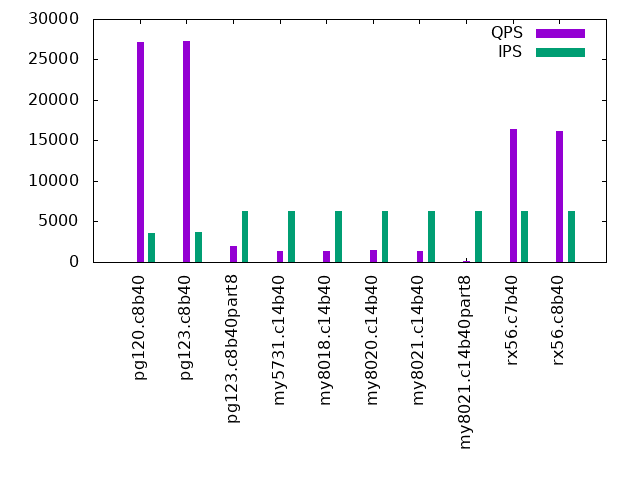

This is a report for the insert benchmark with 2000M docs and 8 clients. It is generated by scripts (bash, awk, sed) and Tufte might not be impressed. An overview of the insert benchmark is here and a short update is here. Below, by DBMS, I mean DBMS+version.config. An example is my8020.c10b40 where my means MySQL, 8020 is version 8.0.20 and c10b40 is the name for the configuration file. All configurations are stored here.
The test server is a c3.8xlarge host with 20,000 EBS PIOPs, 60G RAM and 16 CPU cores (HT disabled). Clients and the DBMS share one server.
The tested DBMS are:
The numbers are inserts/s for l.i0 and l.i1, indexed docs (or rows) /s for l.x and queries/s for q*.2. The values are the average rate over the entire test for inserts (IPS) and queries (QPS). The range of values for IPS and QPS is split into 3 parts: bottom 25%, middle 50%, top 25%. Values in the bottom 25% have a red background, values in the top 25% have a green background and values in the middle have no color. A gray background is used for values that can be ignored because the DBMS did not sustain the target insert rate. Red backgrounds are not used when the minimum value is within 80% of the max value.
| dbms | l.i0 | l.x | l.i1 | q100.2 | q200.2 | q400.2 | q600.2 | q800.2 | q1000.2 |
|---|---|---|---|---|---|---|---|---|---|
| pg120.c8b40 | 467727 | 417122 | 3698 | 31722 | 30744 | 28117 | 27403 | 27182 | 27631 |
| pg123.c8b40 | 467508 | 411628 | 3642 | 31509 | 30493 | 27927 | 27267 | 27252 | 27255 |
| pg123.c8b40part8 | 470367 | 443580 | 128824 | 2734 | 2593 | 2457 | 2279 | 1968 | 1791 |
| my5731.c14b40 | 378644 | 220033 | 9959 | 1522 | 1519 | 1532 | 1440 | 1314 | 1082 |
| my8018.c14b40 | 314713 | 224051 | 10270 | 1573 | 1584 | 1536 | 1428 | 1327 | 1081 |
| my8020.c14b40 | 305018 | 239075 | 10521 | 1531 | 1532 | 1534 | 1529 | 1423 | 1177 |
| my8021.c14b40 | 298418 | 243647 | 10621 | 1532 | 1576 | 1516 | 1408 | 1376 | 1157 |
| my8021.c14b40part8 | 286451 | 347179 | 104575 | 224 | 221 | 203 | 190 | 183 | 181 |
| rx56.c7b40 | 248509 | 306013 | 103359 | 17096 | 16917 | 16725 | 16678 | 16446 | 16231 |
| rx56.c8b40 | 254810 | 342600 | 102041 | 17055 | 16905 | 16718 | 16410 | 16209 | 15941 |
This lists the average rate of inserts/s for the tests that do inserts concurrent with queries. For such tests the query rate is listed in the table above. The read+write tests are setup so that the insert rate should match the target rate every second. Cells that are not at least 95% of the target have a red background to indicate a failure to satisfy the target.
| dbms | q100.2 | q200.2 | q400.2 | q600.2 | q800.2 | q1000.2 |
|---|---|---|---|---|---|---|
| pg120.c8b40 | 790 | 1577 | 3122 | 3450 | 3620 | 3409 |
| pg123.c8b40 | 789 | 1579 | 3142 | 3592 | 3734 | 3526 |
| pg123.c8b40part8 | 790 | 1579 | 3160 | 4739 | 6319 | 7899 |
| my5731.c14b40 | 790 | 1580 | 3160 | 4739 | 6319 | 7899 |
| my8018.c14b40 | 790 | 1580 | 3160 | 4739 | 6319 | 7899 |
| my8020.c14b40 | 790 | 1580 | 3160 | 4739 | 6319 | 7899 |
| my8021.c14b40 | 790 | 1580 | 3160 | 4739 | 6319 | 7899 |
| my8021.c14b40part8 | 790 | 1579 | 3158 | 4739 | 6316 | 7899 |
| rx56.c7b40 | 790 | 1580 | 3160 | 4739 | 6319 | 7899 |
| rx56.c8b40 | 790 | 1580 | 3160 | 4739 | 6319 | 7899 |
| target | 800 | 1600 | 3200 | 4800 | 6400 | 8000 |
l.i0: load without secondary indexes. Graphs for performance per 1-second interval are here.
Average throughput:
Insert response time histogram: each cell has the percentage of responses that take <= the time in the header and max is the max response time in seconds. For the max column values in the top 25% of the range have a red background and in the bottom 25% of the range have a green background. The red background is not used when the min value is within 80% of the max value.
| dbms | 256us | 1ms | 4ms | 16ms | 64ms | 256ms | 1s | 4s | 16s | gt | max |
|---|---|---|---|---|---|---|---|---|---|---|---|
| pg120.c8b40 | 98.712 | 1.269 | 0.016 | 0.003 | nonzero | 0.332 | |||||
| pg123.c8b40 | 98.711 | 1.272 | 0.014 | 0.002 | nonzero | 0.574 | |||||
| pg123.c8b40part8 | 98.773 | 1.213 | 0.011 | 0.003 | nonzero | 0.577 | |||||
| my5731.c14b40 | 98.761 | 0.985 | 0.194 | 0.033 | 0.028 | 0.458 | |||||
| my8018.c14b40 | 96.666 | 3.071 | 0.210 | 0.046 | 0.007 | 0.485 | |||||
| my8020.c14b40 | 96.744 | 3.016 | 0.201 | 0.021 | 0.018 | 0.403 | |||||
| my8021.c14b40 | 96.681 | 3.081 | 0.200 | 0.020 | 0.018 | 0.431 | |||||
| my8021.c14b40part8 | 96.442 | 3.336 | 0.186 | 0.022 | 0.014 | 0.459 | |||||
| rx56.c7b40 | 96.282 | 3.684 | 0.006 | 0.005 | 0.023 | 0.508 | |||||
| rx56.c8b40 | 96.907 | 3.059 | 0.006 | 0.011 | 0.017 | 0.628 |
Performance metrics for the DBMS listed above. Some are normalized by throughput, others are not. Legend for results is here.
ips qps rps rkbps wkbps rpq rkbpq wkbpi csps cpups cspq cpupq dbgb1 dbgb2 rss maxop p50 p99 tag 467727 0 343 2809 186985 0.001 0.006 0.400 35782 82.5 0.077 28 191.4 231.4 0.0 0.332 59761 45044 pg120.c8b40 467508 0 346 2828 187020 0.001 0.006 0.400 35529 82.4 0.076 28 191.4 231.4 0.0 0.574 60625 45746 pg123.c8b40 470367 0 0 2 185429 0.000 0.000 0.394 35138 81.9 0.075 28 191.4 231.4 0.0 0.577 61367 47944 pg123.c8b40part8 378644 0 0 7 139758 0.000 0.000 0.369 38215 74.9 0.101 32 131.6 165.1 43.4 0.458 49244 32462 my5731.c14b40 314713 0 1 12 121421 0.000 0.000 0.386 77373 76.6 0.246 39 131.1 164.7 43.6 0.485 41051 28788 my8018.c14b40 305018 0 0 6 116369 0.000 0.000 0.382 46046 76.7 0.151 40 131.1 164.7 43.6 0.403 39088 26888 my8020.c14b40 298418 0 0 6 113885 0.000 0.000 0.382 45364 76.4 0.152 41 131.1 164.7 43.6 0.431 38457 26484 my8021.c14b40 286451 0 0 2 109457 0.000 0.000 0.382 43917 75.8 0.153 42 131.7 165.2 43.6 0.459 37354 25970 my8021.c14b40part8 248509 0 38 313 118765 0.000 0.001 0.478 25904 70.5 0.104 45 97.4 98.8 16.7 0.508 31864 21574 rx56.c7b40 254810 0 82 620 97645 0.000 0.002 0.383 26219 72.3 0.103 45 47.7 49.0 13.6 0.628 32863 22175 rx56.c8b40
l.x: create secondary indexes.
Average throughput:
Performance metrics for the DBMS listed above. Some are normalized by throughput, others are not. Legend for results is here.
ips qps rps rkbps wkbps rpq rkbpq wkbpi csps cpups cspq cpupq dbgb1 dbgb2 rss maxop p50 p99 tag 417122 0 7146 114606 134299 0.017 0.275 0.322 12574 24.2 0.030 9 367.5 407.6 0.0 0.005 NA NA pg120.c8b40 411628 0 7060 113189 132439 0.017 0.275 0.322 12554 23.9 0.030 9 367.5 407.6 0.0 0.005 NA NA pg123.c8b40 443580 0 8406 130148 127718 0.019 0.293 0.288 14655 24.0 0.033 9 367.5 407.5 0.0 0.006 NA NA pg123.c8b40part8 220033 0 1744 138602 179429 0.008 0.630 0.815 12004 12.3 0.055 9 294.2 327.7 45.9 0.044 NA NA my5731.c14b40 224051 0 1773 140736 182414 0.008 0.628 0.814 23207 14.8 0.104 11 293.1 326.7 46.1 0.009 NA NA my8018.c14b40 239075 0 1889 149715 194860 0.008 0.626 0.815 22913 15.9 0.096 11 293.1 326.7 46.1 0.005 NA NA my8020.c14b40 243647 0 1936 153755 198623 0.008 0.631 0.815 22270 16.2 0.091 11 293.1 326.7 46.1 0.006 NA NA my8021.c14b40 347179 0 2299 128451 226320 0.007 0.370 0.652 35272 19.7 0.102 9 293.7 327.3 46.0 0.007 NA NA my8021.c14b40part8 306013 0 3786 82575 55029 0.012 0.270 0.180 8026 29.4 0.026 15 218.6 219.9 44.3 0.005 NA NA rx56.c7b40 342600 0 3587 66627 48242 0.010 0.194 0.141 7801 32.7 0.023 15 94.7 96.0 44.5 0.006 NA NA rx56.c8b40
l.i1: continue load after secondary indexes created. Graphs for performance per 1-second interval are here.
Average throughput:
Insert response time histogram: each cell has the percentage of responses that take <= the time in the header and max is the max response time in seconds. For the max column values in the top 25% of the range have a red background and in the bottom 25% of the range have a green background. The red background is not used when the min value is within 80% of the max value.
| dbms | 256us | 1ms | 4ms | 16ms | 64ms | 256ms | 1s | 4s | 16s | gt | max |
|---|---|---|---|---|---|---|---|---|---|---|---|
| pg120.c8b40 | 0.858 | 98.608 | 0.534 | nonzero | 0.001 | 4.096 | |||||
| pg123.c8b40 | 0.710 | 98.780 | 0.509 | nonzero | 1.430 | ||||||
| pg123.c8b40part8 | 93.931 | 4.102 | 1.710 | 0.255 | 0.002 | 0.562 | |||||
| my5731.c14b40 | 0.051 | 74.118 | 15.589 | 5.758 | 4.452 | 0.033 | 3.497 | ||||
| my8018.c14b40 | 0.001 | 74.746 | 15.088 | 5.896 | 4.246 | 0.023 | 1.825 | ||||
| my8020.c14b40 | 76.642 | 13.346 | 5.812 | 4.162 | 0.038 | 2.285 | |||||
| my8021.c14b40 | 76.977 | 12.960 | 5.910 | 4.127 | 0.026 | 2.135 | |||||
| my8021.c14b40part8 | 94.408 | 5.038 | 0.405 | 0.127 | 0.021 | nonzero | 1.887 | ||||
| rx56.c7b40 | 72.608 | 27.349 | 0.029 | 0.002 | 0.013 | 0.495 | |||||
| rx56.c8b40 | 70.382 | 29.570 | 0.034 | 0.003 | 0.012 | 0.379 |
Performance metrics for the DBMS listed above. Some are normalized by throughput, others are not. Legend for results is here.
ips qps rps rkbps wkbps rpq rkbpq wkbpi csps cpups cspq cpupq dbgb1 dbgb2 rss maxop p50 p99 tag 3698 0 5117 41202 99077 1.384 11.143 26.794 12714 11.3 3.438 489 381.3 421.4 0.0 4.096 449 250 pg120.c8b40 3642 0 5037 40510 97568 1.383 11.123 26.790 12493 11.2 3.430 492 381.3 421.4 0.0 1.430 449 250 pg123.c8b40 128824 0 1190 9972 164978 0.009 0.077 1.281 29580 53.5 0.230 66 384.2 424.2 0.0 0.562 24372 450 pg123.c8b40part8 9959 0 3269 52305 169504 0.328 5.252 17.020 29525 10.8 2.965 174 416.9 467.3 45.9 3.497 200 50 my5731.c14b40 10270 0 3392 54271 175880 0.330 5.285 17.126 74752 12.1 7.279 189 415.3 465.8 46.1 1.825 200 50 my8018.c14b40 10521 0 3503 56052 180875 0.333 5.328 17.192 83919 12.7 7.977 193 415.3 465.8 46.1 2.285 200 50 my8020.c14b40 10621 0 3536 56580 182987 0.333 5.327 17.228 83033 13.1 7.818 197 415.3 465.6 46.1 2.135 200 50 my8021.c14b40 104575 0 307 4910 156690 0.003 0.047 1.498 51801 58.1 0.495 89 308.8 342.4 46.0 1.887 15033 100 my8021.c14b40part8 103359 0 352 1897 107415 0.003 0.018 1.039 31725 48.1 0.307 74 228.5 232.1 42.2 0.495 12885 8396 rx56.c7b40 102041 0 516 3119 119566 0.005 0.031 1.172 31442 49.4 0.308 77 102.6 106.2 42.2 0.379 12735 7941 rx56.c8b40
q100.2: range queries with 100 insert/s per client, 2nd loop. Graphs for performance per 1-second interval are here.
Average throughput:
Query response time histogram: each cell has the percentage of responses that take <= the time in the header and max is the max response time in seconds. For max values in the top 25% of the range have a red background and in the bottom 25% of the range have a green background. The red background is not used when the min value is within 80% of the max value.
| dbms | 256us | 1ms | 4ms | 16ms | 64ms | 256ms | 1s | 4s | 16s | gt | max |
|---|---|---|---|---|---|---|---|---|---|---|---|
| pg120.c8b40 | 94.453 | 5.432 | 0.113 | 0.002 | nonzero | 0.025 | |||||
| pg123.c8b40 | 94.173 | 5.719 | 0.106 | 0.002 | nonzero | 0.023 | |||||
| pg123.c8b40part8 | 65.950 | 1.445 | 31.256 | 1.297 | 0.052 | nonzero | 0.455 | ||||
| my5731.c14b40 | 0.062 | 43.276 | 3.196 | 51.180 | 2.193 | 0.085 | 0.008 | nonzero | 1.289 | ||
| my8018.c14b40 | 0.006 | 43.360 | 3.381 | 51.119 | 2.062 | 0.069 | 0.003 | 0.765 | |||
| my8020.c14b40 | 0.005 | 43.367 | 3.199 | 50.973 | 2.363 | 0.088 | 0.005 | 0.942 | |||
| my8021.c14b40 | 0.007 | 43.379 | 3.395 | 50.732 | 2.380 | 0.102 | 0.006 | 0.820 | |||
| my8021.c14b40part8 | 33.887 | 0.932 | 4.933 | 41.600 | 18.488 | 0.130 | 0.030 | 3.996 | |||
| rx56.c7b40 | 99.972 | 0.027 | nonzero | nonzero | 0.052 | ||||||
| rx56.c8b40 | 99.978 | 0.021 | nonzero | nonzero | 0.017 |
Insert response time histogram: each cell has the percentage of responses that take <= the time in the header and max is the max response time in seconds. For max values in the top 25% of the range have a red background and in the bottom 25% of the range have a green background. The red background is not used when the min value is within 80% of the max value.
| dbms | 256us | 1ms | 4ms | 16ms | 64ms | 256ms | 1s | 4s | 16s | gt | max |
|---|---|---|---|---|---|---|---|---|---|---|---|
| pg120.c8b40 | 0.608 | 98.743 | 0.649 | 0.806 | |||||||
| pg123.c8b40 | 0.389 | 98.601 | 1.010 | 0.989 | |||||||
| pg123.c8b40part8 | 36.722 | 62.983 | 0.295 | 0.587 | |||||||
| my5731.c14b40 | 0.003 | 56.653 | 42.174 | 1.167 | 0.003 | 0.275 | |||||
| my8018.c14b40 | 83.229 | 16.278 | 0.493 | 0.201 | |||||||
| my8020.c14b40 | 70.569 | 28.778 | 0.653 | 0.222 | |||||||
| my8021.c14b40 | 56.965 | 42.069 | 0.965 | 0.217 | |||||||
| my8021.c14b40part8 | 2.479 | 95.517 | 1.618 | 0.253 | 0.104 | 0.028 | 2.105 | ||||
| rx56.c7b40 | 98.340 | 1.611 | 0.049 | 0.033 | |||||||
| rx56.c8b40 | 97.705 | 2.285 | 0.010 | 0.026 |
Performance metrics for the DBMS listed above. Some are normalized by throughput, others are not. Legend for results is here.
ips qps rps rkbps wkbps rpq rkbpq wkbpi csps cpups cspq cpupq dbgb1 dbgb2 rss maxop p50 p99 tag 790 31722 1062 8572 23701 0.033 0.270 30.005 123559 40.6 3.895 205 381.6 421.7 0.0 0.025 4011 3724 pg120.c8b40 789 31509 1062 8560 23623 0.034 0.272 29.925 122857 41.1 3.899 209 381.6 421.7 0.0 0.023 3995 3660 pg123.c8b40 790 2734 7753 62857 16561 2.835 22.987 20.966 26587 11.4 9.723 667 384.5 424.5 0.0 0.455 336 176 pg123.c8b40part8 790 1522 7775 124402 65503 5.108 81.725 82.926 27748 5.7 18.229 599 417.0 467.5 45.3 1.289 192 96 my5731.c14b40 790 1573 8005 128078 65701 5.090 81.433 83.176 34480 5.9 21.923 600 415.5 465.9 45.5 0.765 208 112 my8018.c14b40 790 1531 7808 124935 64804 5.100 81.604 82.041 35265 5.9 23.034 617 415.5 466.0 45.5 0.942 192 96 my8020.c14b40 790 1532 7815 125045 64269 5.100 81.601 81.363 35353 6.1 23.070 637 415.5 465.8 45.5 0.820 192 96 my8021.c14b40 790 224 9048 144775 29326 40.485 647.761 37.127 26386 2.4 118.057 1718 309.4 343.0 45.7 3.996 32 0 my8021.c14b40part8 790 17096 67 408 1646 0.004 0.024 2.084 70554 47.6 4.127 445 228.6 232.6 42.1 0.052 2159 1982 rx56.c7b40 790 17055 61 719 2101 0.004 0.042 2.659 70437 47.7 4.130 447 102.4 106.4 42.1 0.017 2110 1968 rx56.c8b40
q200.2: range queries with 200 insert/s per client, 2nd loop. Graphs for performance per 1-second interval are here.
Average throughput:
Query response time histogram: each cell has the percentage of responses that take <= the time in the header and max is the max response time in seconds. For max values in the top 25% of the range have a red background and in the bottom 25% of the range have a green background. The red background is not used when the min value is within 80% of the max value.
| dbms | 256us | 1ms | 4ms | 16ms | 64ms | 256ms | 1s | 4s | 16s | gt | max |
|---|---|---|---|---|---|---|---|---|---|---|---|
| pg120.c8b40 | 90.457 | 9.346 | 0.194 | 0.003 | nonzero | 0.027 | |||||
| pg123.c8b40 | 89.917 | 9.887 | 0.194 | 0.003 | nonzero | 0.026 | |||||
| pg123.c8b40part8 | 63.086 | 1.420 | 34.021 | 1.404 | 0.068 | 0.001 | 0.493 | ||||
| my5731.c14b40 | 0.080 | 43.364 | 3.523 | 50.513 | 2.431 | 0.080 | 0.009 | 0.001 | 1.520 | ||
| my8018.c14b40 | 0.007 | 43.491 | 3.805 | 50.581 | 2.027 | 0.083 | 0.007 | 0.747 | |||
| my8020.c14b40 | 0.005 | 43.338 | 3.640 | 50.381 | 2.521 | 0.107 | 0.007 | nonzero | 1.101 | ||
| my8021.c14b40 | 0.006 | 43.439 | 3.944 | 50.192 | 2.338 | 0.078 | 0.004 | 0.957 | |||
| my8021.c14b40part8 | 32.749 | 0.888 | 4.664 | 43.682 | 17.910 | 0.097 | 0.009 | 3.175 | |||
| rx56.c7b40 | 99.962 | 0.037 | 0.001 | nonzero | 0.018 | ||||||
| rx56.c8b40 | 99.970 | 0.029 | 0.001 | nonzero | 0.018 |
Insert response time histogram: each cell has the percentage of responses that take <= the time in the header and max is the max response time in seconds. For max values in the top 25% of the range have a red background and in the bottom 25% of the range have a green background. The red background is not used when the min value is within 80% of the max value.
| dbms | 256us | 1ms | 4ms | 16ms | 64ms | 256ms | 1s | 4s | 16s | gt | max |
|---|---|---|---|---|---|---|---|---|---|---|---|
| pg120.c8b40 | 0.469 | 99.285 | 0.233 | 0.005 | 0.009 | 4.021 | |||||
| pg123.c8b40 | 0.260 | 99.330 | 0.410 | 0.726 | |||||||
| pg123.c8b40part8 | 79.156 | 20.667 | 0.177 | 0.444 | |||||||
| my5731.c14b40 | 0.269 | 98.436 | 1.210 | 0.083 | 0.002 | 0.349 | |||||
| my8018.c14b40 | 0.030 | 99.009 | 0.931 | 0.031 | 0.150 | ||||||
| my8020.c14b40 | 0.003 | 98.856 | 1.116 | 0.024 | 0.114 | ||||||
| my8021.c14b40 | 98.396 | 1.569 | 0.035 | 0.206 | |||||||
| my8021.c14b40part8 | 10.217 | 88.168 | 1.375 | 0.226 | 0.005 | 0.009 | 2.151 | ||||
| rx56.c7b40 | 93.679 | 6.269 | 0.052 | 0.039 | |||||||
| rx56.c8b40 | 93.146 | 6.790 | 0.064 | 0.024 |
Performance metrics for the DBMS listed above. Some are normalized by throughput, others are not. Legend for results is here.
ips qps rps rkbps wkbps rpq rkbpq wkbpi csps cpups cspq cpupq dbgb1 dbgb2 rss maxop p50 p99 tag 1577 30744 2122 17096 40466 0.069 0.556 25.657 120381 43.5 3.916 226 382.2 422.3 0.0 0.027 3948 3535 pg120.c8b40 1579 30493 2126 17121 40644 0.070 0.561 25.742 119597 44.2 3.922 232 382.2 422.3 0.0 0.026 3726 3452 pg123.c8b40 1579 2593 8136 66045 24893 3.137 25.466 15.766 27028 12.1 10.422 747 385.4 425.5 0.0 0.493 320 144 pg123.c8b40part8 1580 1519 7573 121163 65554 4.987 79.786 41.495 27024 5.7 17.795 601 417.4 467.9 45.1 1.520 192 96 my5731.c14b40 1580 1584 7874 125989 66738 4.971 79.528 42.245 34120 6.4 21.538 646 415.9 466.3 45.2 0.747 208 96 my8018.c14b40 1580 1532 7646 122329 65782 4.992 79.875 41.639 34826 6.4 22.740 669 415.9 466.3 45.2 1.101 192 96 my8020.c14b40 1580 1576 7848 125561 67136 4.978 79.651 42.496 35600 6.6 22.583 670 415.9 466.2 45.2 0.957 208 112 my8021.c14b40 1579 221 9166 146662 32009 41.533 664.533 20.273 27283 2.9 123.622 2102 310.8 344.4 45.4 3.175 32 16 my8021.c14b40part8 1580 16917 18 72 1838 0.001 0.004 1.163 69829 47.9 4.128 453 229.3 230.1 42.1 0.018 2143 1998 rx56.c7b40 1580 16905 36 411 2179 0.002 0.024 1.379 69831 48.2 4.131 456 102.9 103.6 42.1 0.018 2126 1966 rx56.c8b40
q400.2: range queries with 400 insert/s per client, 2nd loop. Graphs for performance per 1-second interval are here.
Average throughput:
Query response time histogram: each cell has the percentage of responses that take <= the time in the header and max is the max response time in seconds. For max values in the top 25% of the range have a red background and in the bottom 25% of the range have a green background. The red background is not used when the min value is within 80% of the max value.
| dbms | 256us | 1ms | 4ms | 16ms | 64ms | 256ms | 1s | 4s | 16s | gt | max |
|---|---|---|---|---|---|---|---|---|---|---|---|
| pg120.c8b40 | 78.400 | 21.158 | 0.434 | 0.008 | nonzero | 0.035 | |||||
| pg123.c8b40 | 77.423 | 22.149 | 0.419 | 0.009 | nonzero | 0.028 | |||||
| pg123.c8b40part8 | 59.425 | 1.199 | 37.882 | 1.444 | 0.049 | 0.001 | 0.493 | ||||
| my5731.c14b40 | 0.052 | 42.680 | 3.549 | 51.503 | 2.157 | 0.056 | 0.004 | 0.886 | |||
| my8018.c14b40 | 0.005 | 42.719 | 3.668 | 51.210 | 2.317 | 0.077 | 0.004 | 0.683 | |||
| my8020.c14b40 | 0.004 | 42.720 | 3.622 | 51.286 | 2.282 | 0.082 | 0.005 | 0.861 | |||
| my8021.c14b40 | 0.004 | 42.701 | 3.670 | 51.052 | 2.465 | 0.103 | 0.006 | 0.638 | |||
| my8021.c14b40part8 | 29.869 | 0.891 | 3.886 | 45.374 | 19.844 | 0.122 | 0.014 | 1.987 | |||
| rx56.c7b40 | 99.910 | 0.081 | 0.009 | nonzero | 0.049 | ||||||
| rx56.c8b40 | 99.907 | 0.082 | 0.011 | nonzero | 0.022 |
Insert response time histogram: each cell has the percentage of responses that take <= the time in the header and max is the max response time in seconds. For max values in the top 25% of the range have a red background and in the bottom 25% of the range have a green background. The red background is not used when the min value is within 80% of the max value.
| dbms | 256us | 1ms | 4ms | 16ms | 64ms | 256ms | 1s | 4s | 16s | gt | max |
|---|---|---|---|---|---|---|---|---|---|---|---|
| pg120.c8b40 | 0.115 | 99.171 | 0.714 | 0.715 | |||||||
| pg123.c8b40 | 0.192 | 99.668 | 0.140 | 0.001 | 1.000 | ||||||
| pg123.c8b40part8 | 27.054 | 71.033 | 1.905 | 0.008 | 0.394 | ||||||
| my5731.c14b40 | 0.249 | 97.364 | 2.352 | 0.036 | 0.175 | ||||||
| my8018.c14b40 | 0.015 | 97.803 | 2.120 | 0.062 | 0.147 | ||||||
| my8020.c14b40 | 0.016 | 97.712 | 2.220 | 0.052 | 0.145 | ||||||
| my8021.c14b40 | 98.320 | 1.611 | 0.068 | 0.001 | 0.280 | ||||||
| my8021.c14b40part8 | 5.433 | 91.457 | 2.680 | 0.381 | 0.049 | 0.001 | 1.192 | ||||
| rx56.c7b40 | 90.497 | 9.418 | 0.085 | 0.038 | |||||||
| rx56.c8b40 | 90.530 | 9.368 | 0.102 | 0.037 |
Performance metrics for the DBMS listed above. Some are normalized by throughput, others are not. Legend for results is here.
ips qps rps rkbps wkbps rpq rkbpq wkbpi csps cpups cspq cpupq dbgb1 dbgb2 rss maxop p50 p99 tag 3122 28117 4301 34590 82963 0.153 1.230 26.574 111263 51.6 3.957 294 384.3 424.4 0.0 0.035 3804 2877 pg120.c8b40 3142 27927 4317 34754 83429 0.155 1.244 26.550 110500 51.9 3.957 297 384.3 424.4 0.0 0.028 3788 2877 pg123.c8b40 3160 2457 8113 65541 30500 3.301 26.671 9.653 26804 12.9 10.907 840 388.9 429.0 0.0 0.493 304 176 pg123.c8b40part8 3160 1532 7687 122992 89570 5.019 80.298 28.349 29804 7.2 19.458 752 418.2 468.6 44.5 0.886 192 96 my5731.c14b40 3160 1536 7703 123246 89870 5.017 80.264 28.443 36629 7.7 23.855 802 416.7 467.1 45.0 0.683 192 112 my8018.c14b40 3160 1534 7700 123209 89356 5.019 80.303 28.281 38448 7.8 25.059 813 416.7 467.1 44.6 0.861 192 96 my8020.c14b40 3160 1516 7608 121724 89255 5.018 80.287 28.249 38233 8.0 25.218 844 416.7 467.0 44.9 0.638 192 96 my8021.c14b40 3158 203 9114 145826 43012 44.942 719.064 13.621 29701 4.5 146.457 3550 316.5 350.1 45.2 1.987 32 16 my8021.c14b40part8 3160 16725 56 294 5361 0.003 0.018 1.697 69152 48.8 4.135 467 230.7 232.9 42.1 0.049 2094 1902 rx56.c7b40 3160 16718 164 1621 6523 0.010 0.097 2.065 69229 49.4 4.141 473 103.5 105.7 42.1 0.022 2127 1918 rx56.c8b40
q600.2: range queries with 600 insert/s per client, 2nd loop. Graphs for performance per 1-second interval are here.
Average throughput:
Query response time histogram: each cell has the percentage of responses that take <= the time in the header and max is the max response time in seconds. For max values in the top 25% of the range have a red background and in the bottom 25% of the range have a green background. The red background is not used when the min value is within 80% of the max value.
| dbms | 256us | 1ms | 4ms | 16ms | 64ms | 256ms | 1s | 4s | 16s | gt | max |
|---|---|---|---|---|---|---|---|---|---|---|---|
| pg120.c8b40 | 74.976 | 24.491 | 0.524 | 0.009 | nonzero | nonzero | 0.130 | ||||
| pg123.c8b40 | 73.710 | 25.759 | 0.523 | 0.008 | nonzero | 0.052 | |||||
| pg123.c8b40part8 | 56.506 | 1.047 | 40.723 | 1.660 | 0.062 | 0.001 | 0.472 | ||||
| my5731.c14b40 | 0.032 | 41.921 | 3.108 | 51.853 | 3.011 | 0.070 | 0.004 | nonzero | 1.327 | ||
| my8018.c14b40 | 0.004 | 41.899 | 3.201 | 51.674 | 3.097 | 0.117 | 0.007 | 0.705 | |||
| my8020.c14b40 | 0.002 | 42.046 | 3.465 | 52.280 | 2.150 | 0.055 | 0.003 | 0.832 | |||
| my8021.c14b40 | 0.003 | 41.879 | 3.266 | 51.307 | 3.391 | 0.147 | 0.008 | 0.872 | |||
| my8021.c14b40part8 | 28.133 | 0.997 | 3.391 | 43.808 | 23.472 | 0.173 | 0.026 | 2.764 | |||
| rx56.c7b40 | 99.826 | 0.159 | 0.015 | nonzero | 0.028 | ||||||
| rx56.c8b40 | 99.778 | 0.202 | 0.020 | nonzero | nonzero | 0.241 |
Insert response time histogram: each cell has the percentage of responses that take <= the time in the header and max is the max response time in seconds. For max values in the top 25% of the range have a red background and in the bottom 25% of the range have a green background. The red background is not used when the min value is within 80% of the max value.
| dbms | 256us | 1ms | 4ms | 16ms | 64ms | 256ms | 1s | 4s | 16s | gt | max |
|---|---|---|---|---|---|---|---|---|---|---|---|
| pg120.c8b40 | 0.019 | 99.501 | 0.481 | 0.816 | |||||||
| pg123.c8b40 | 0.042 | 99.768 | 0.190 | 0.912 | |||||||
| pg123.c8b40part8 | 0.627 | 73.907 | 24.963 | 0.499 | 0.003 | 0.372 | |||||
| my5731.c14b40 | 0.108 | 94.604 | 5.212 | 0.077 | 0.204 | ||||||
| my8018.c14b40 | 0.002 | 94.984 | 4.841 | 0.173 | 0.250 | ||||||
| my8020.c14b40 | 0.008 | 97.522 | 2.409 | 0.061 | 0.129 | ||||||
| my8021.c14b40 | 93.300 | 6.519 | 0.181 | 0.176 | |||||||
| my8021.c14b40part8 | 6.102 | 91.540 | 1.960 | 0.312 | 0.081 | 0.005 | 1.671 | ||||
| rx56.c7b40 | 75.891 | 23.750 | 0.359 | 0.001 | 0.072 | ||||||
| rx56.c8b40 | 78.630 | 20.830 | 0.539 | 0.001 | 0.066 |
Performance metrics for the DBMS listed above. Some are normalized by throughput, others are not. Legend for results is here.
ips qps rps rkbps wkbps rpq rkbpq wkbpi csps cpups cspq cpupq dbgb1 dbgb2 rss maxop p50 p99 tag 3450 27403 4857 39003 91296 0.177 1.423 26.460 108960 53.3 3.976 311 390.0 430.0 0.0 0.130 3532 2893 pg120.c8b40 3592 27267 5062 40588 94888 0.186 1.489 26.413 108498 54.1 3.979 317 390.0 430.0 0.0 0.052 3516 2845 pg123.c8b40 4739 2279 7836 63260 31198 3.439 27.763 6.583 25890 13.0 11.362 913 396.2 436.3 0.0 0.472 288 144 pg123.c8b40part8 4739 1440 7396 118334 106054 5.136 82.182 22.377 30878 8.5 21.445 945 419.3 469.8 44.5 1.327 192 112 my5731.c14b40 4739 1428 7343 117485 106823 5.143 82.284 22.539 37816 9.2 26.486 1031 417.8 468.2 44.7 0.705 176 96 my8018.c14b40 4739 1529 7804 124867 109999 5.103 81.655 23.209 41599 9.5 27.203 994 417.8 468.2 44.6 0.832 192 112 my8020.c14b40 4739 1408 7251 116011 105983 5.148 82.371 22.362 39935 9.4 28.355 1068 417.8 468.1 44.9 0.872 176 80 my8021.c14b40 4739 190 9052 144824 53646 47.590 761.433 11.319 32516 5.7 170.955 4795 324.7 358.3 44.9 2.764 32 0 my8021.c14b40part8 4739 16678 52 455 6869 0.003 0.027 1.449 68986 49.2 4.136 472 232.8 233.2 42.5 0.028 2110 1902 rx56.c7b40 4739 16410 320 3514 10699 0.020 0.214 2.258 68105 51.2 4.150 499 104.4 104.9 42.6 0.241 2078 1902 rx56.c8b40
q800.2: range queries with 800 insert/s per client, 2nd loop. Graphs for performance per 1-second interval are here.
Average throughput:
Query response time histogram: each cell has the percentage of responses that take <= the time in the header and max is the max response time in seconds. For max values in the top 25% of the range have a red background and in the bottom 25% of the range have a green background. The red background is not used when the min value is within 80% of the max value.
| dbms | 256us | 1ms | 4ms | 16ms | 64ms | 256ms | 1s | 4s | 16s | gt | max |
|---|---|---|---|---|---|---|---|---|---|---|---|
| pg120.c8b40 | 73.651 | 25.821 | 0.519 | 0.009 | nonzero | nonzero | 1.032 | ||||
| pg123.c8b40 | 72.555 | 26.931 | 0.505 | 0.008 | nonzero | 0.039 | |||||
| pg123.c8b40part8 | 51.809 | 0.981 | 44.523 | 2.620 | 0.068 | nonzero | 0.346 | ||||
| my5731.c14b40 | 0.028 | 41.061 | 2.635 | 51.029 | 5.175 | 0.069 | 0.004 | 0.676 | |||
| my8018.c14b40 | 0.003 | 41.098 | 2.725 | 51.408 | 4.643 | 0.118 | 0.004 | 0.705 | |||
| my8020.c14b40 | 0.002 | 41.162 | 2.911 | 52.835 | 3.002 | 0.084 | 0.005 | 0.726 | |||
| my8021.c14b40 | 0.002 | 41.079 | 2.860 | 52.530 | 3.395 | 0.127 | 0.006 | 0.836 | |||
| my8021.c14b40part8 | 27.185 | 0.933 | 3.199 | 39.537 | 29.016 | 0.111 | 0.019 | 3.082 | |||
| rx56.c7b40 | 99.691 | 0.290 | 0.019 | nonzero | nonzero | 0.065 | |||||
| rx56.c8b40 | 99.579 | 0.394 | 0.027 | nonzero | nonzero | 0.095 |
Insert response time histogram: each cell has the percentage of responses that take <= the time in the header and max is the max response time in seconds. For max values in the top 25% of the range have a red background and in the bottom 25% of the range have a green background. The red background is not used when the min value is within 80% of the max value.
| dbms | 256us | 1ms | 4ms | 16ms | 64ms | 256ms | 1s | 4s | 16s | gt | max |
|---|---|---|---|---|---|---|---|---|---|---|---|
| pg120.c8b40 | 0.085 | 99.680 | 0.232 | 0.003 | 1.443 | ||||||
| pg123.c8b40 | 0.147 | 99.672 | 0.181 | 0.734 | |||||||
| pg123.c8b40part8 | 0.692 | 57.375 | 41.135 | 0.795 | 0.003 | 0.361 | |||||
| my5731.c14b40 | 0.023 | 92.497 | 7.391 | 0.089 | 0.001 | 0.375 | |||||
| my8018.c14b40 | 0.001 | 92.872 | 6.992 | 0.134 | nonzero | 0.335 | |||||
| my8020.c14b40 | nonzero | 94.932 | 4.985 | 0.082 | nonzero | 0.273 | |||||
| my8021.c14b40 | 93.883 | 5.998 | 0.119 | nonzero | 0.327 | ||||||
| my8021.c14b40part8 | 11.045 | 88.198 | 0.624 | 0.109 | 0.019 | 0.004 | 1.829 | ||||
| rx56.c7b40 | 45.118 | 54.210 | 0.673 | 0.051 | |||||||
| rx56.c8b40 | 44.322 | 54.601 | 1.074 | 0.003 | 0.072 |
Performance metrics for the DBMS listed above. Some are normalized by throughput, others are not. Legend for results is here.
ips qps rps rkbps wkbps rpq rkbpq wkbpi csps cpups cspq cpupq dbgb1 dbgb2 rss maxop p50 p99 tag 3620 27182 4901 39465 91715 0.180 1.452 25.334 107845 53.4 3.967 314 393.9 434.0 0.0 1.032 3548 2845 pg120.c8b40 3734 27252 5051 40605 94546 0.185 1.490 25.320 108063 54.2 3.965 318 393.9 434.0 0.0 0.039 3580 2861 pg123.c8b40 6319 1968 8787 73557 45306 4.464 37.367 7.170 27149 13.4 13.792 1089 404.9 444.5 0.0 0.346 256 144 pg123.c8b40part8 6319 1314 7051 112816 117962 5.368 85.890 18.667 31889 9.9 24.278 1206 420.8 471.3 44.2 0.676 160 112 my5731.c14b40 6319 1327 7105 113675 117770 5.353 85.644 18.637 39242 10.6 29.565 1278 419.3 469.7 44.7 0.705 176 96 my8018.c14b40 6319 1423 7556 120897 123476 5.310 84.959 19.540 43288 11.1 30.420 1248 419.3 469.7 44.6 0.726 176 96 my8020.c14b40 6319 1376 7349 117580 122534 5.342 85.476 19.391 42784 11.3 31.102 1314 419.3 469.6 44.6 0.836 176 96 my8021.c14b40 6316 183 8893 142287 52980 48.595 777.525 8.389 31407 6.7 171.621 5858 328.7 362.5 44.6 3.082 16 0 my8021.c14b40part8 6319 16446 193 1284 10296 0.012 0.078 1.629 68368 50.2 4.157 488 235.4 238.8 42.7 0.065 2078 1870 rx56.c7b40 6319 16209 409 4052 13695 0.025 0.250 2.167 67586 52.3 4.170 516 105.6 109.0 42.7 0.095 2062 1886 rx56.c8b40
q1000.2: range queries with 1000 insert/s per client, 2nd loop. Graphs for performance per 1-second interval are here.
Average throughput:
Query response time histogram: each cell has the percentage of responses that take <= the time in the header and max is the max response time in seconds. For max values in the top 25% of the range have a red background and in the bottom 25% of the range have a green background. The red background is not used when the min value is within 80% of the max value.
| dbms | 256us | 1ms | 4ms | 16ms | 64ms | 256ms | 1s | 4s | 16s | gt | max |
|---|---|---|---|---|---|---|---|---|---|---|---|
| pg120.c8b40 | 75.415 | 24.034 | 0.542 | 0.009 | nonzero | nonzero | 0.174 | ||||
| pg123.c8b40 | 73.067 | 26.373 | 0.551 | 0.009 | nonzero | 0.029 | |||||
| pg123.c8b40part8 | 49.224 | 0.880 | 46.543 | 3.255 | 0.097 | 0.001 | 0.389 | ||||
| my5731.c14b40 | 0.019 | 39.874 | 1.769 | 46.973 | 11.268 | 0.089 | 0.007 | nonzero | 1.358 | ||
| my8018.c14b40 | 0.002 | 39.859 | 1.843 | 47.346 | 10.794 | 0.148 | 0.008 | nonzero | 1.098 | ||
| my8020.c14b40 | 0.002 | 40.028 | 2.083 | 49.808 | 7.944 | 0.129 | 0.007 | 0.728 | |||
| my8021.c14b40 | 0.002 | 39.944 | 2.058 | 49.547 | 8.307 | 0.131 | 0.012 | 0.941 | |||
| my8021.c14b40part8 | 25.607 | 0.977 | 3.038 | 42.554 | 27.687 | 0.120 | 0.016 | 2.692 | |||
| rx56.c7b40 | 99.551 | 0.425 | 0.023 | nonzero | nonzero | 0.096 | |||||
| rx56.c8b40 | 99.290 | 0.676 | 0.034 | 0.001 | nonzero | nonzero | 0.283 |
Insert response time histogram: each cell has the percentage of responses that take <= the time in the header and max is the max response time in seconds. For max values in the top 25% of the range have a red background and in the bottom 25% of the range have a green background. The red background is not used when the min value is within 80% of the max value.
| dbms | 256us | 1ms | 4ms | 16ms | 64ms | 256ms | 1s | 4s | 16s | gt | max |
|---|---|---|---|---|---|---|---|---|---|---|---|
| pg120.c8b40 | 0.019 | 99.460 | 0.521 | 0.794 | |||||||
| pg123.c8b40 | 0.039 | 99.716 | 0.245 | 0.828 | |||||||
| pg123.c8b40part8 | 1.339 | 57.698 | 40.112 | 0.849 | 0.003 | 0.295 | |||||
| my5731.c14b40 | 0.016 | 94.415 | 5.470 | 0.095 | 0.003 | nonzero | 1.725 | ||||
| my8018.c14b40 | 94.020 | 5.864 | 0.112 | 0.003 | 0.596 | ||||||
| my8020.c14b40 | 95.816 | 4.093 | 0.087 | 0.003 | 0.662 | ||||||
| my8021.c14b40 | 96.264 | 3.639 | 0.093 | 0.005 | nonzero | 1.689 | |||||
| my8021.c14b40part8 | 2.596 | 96.614 | 0.667 | 0.106 | 0.016 | 0.002 | 1.601 | ||||
| rx56.c7b40 | 44.251 | 54.892 | 0.857 | 0.064 | |||||||
| rx56.c8b40 | 48.027 | 50.983 | 0.989 | nonzero | 0.067 |
Performance metrics for the DBMS listed above. Some are normalized by throughput, others are not. Legend for results is here.
ips qps rps rkbps wkbps rpq rkbpq wkbpi csps cpups cspq cpupq dbgb1 dbgb2 rss maxop p50 p99 tag 3409 27631 4759 38650 90084 0.172 1.399 26.425 109503 53.6 3.963 310 402.5 442.5 0.0 0.174 3516 2893 pg120.c8b40 3526 27255 4914 39909 93178 0.180 1.464 26.427 108034 54.3 3.964 319 402.4 442.5 0.0 0.029 3500 2845 pg123.c8b40 7899 1791 9035 76246 52122 5.044 42.565 6.599 27469 13.7 15.335 1224 409.2 448.8 0.0 0.389 224 112 pg123.c8b40part8 7899 1082 6540 104634 134993 6.044 96.705 17.090 32774 11.4 30.290 1686 422.7 473.2 43.9 1.358 144 80 my5731.c14b40 7899 1081 6520 104322 133801 6.033 96.532 16.939 40476 12.2 37.453 1806 421.2 471.6 44.4 1.098 144 80 my8018.c14b40 7899 1177 7012 112186 140378 5.959 95.340 17.772 44741 12.6 38.023 1713 421.2 471.6 44.3 0.728 144 96 my8020.c14b40 7899 1157 6905 110476 139023 5.970 95.517 17.600 44217 12.8 38.230 1771 421.2 471.5 44.6 0.941 144 64 my8021.c14b40 7899 181 9019 144302 56157 49.938 799.015 7.109 32269 8.3 178.677 7353 331.4 366.0 44.3 2.692 16 0 my8021.c14b40part8 7899 16231 247 1590 13369 0.015 0.098 1.693 67710 51.2 4.172 505 239.2 242.2 42.6 0.096 2062 1854 rx56.c7b40 7899 15941 481 4571 16248 0.030 0.287 2.057 66955 52.5 4.200 527 107.0 110.0 42.8 0.283 2014 1838 rx56.c8b40
l.i0: load without secondary indexes
Performance metrics for all DBMS, not just the ones listed above. Some are normalized by throughput, others are not. Legend for results is here.
ips qps rps rkbps wkbps rpq rkbpq wkbpi csps cpups cspq cpupq dbgb1 dbgb2 rss maxop p50 p99 tag 467508 0 346 2828 187020 0.001 0.006 0.400 35529 82.4 0.076 28 191.4 231.4 0.0 0.574 60625 45746 pg123.c8b40 298418 0 0 6 113885 0.000 0.000 0.382 45364 76.4 0.152 41 131.1 164.7 43.6 0.431 38457 26484 my8021.c14b40 248509 0 38 313 118765 0.000 0.001 0.478 25904 70.5 0.104 45 97.4 98.8 16.7 0.508 31864 21574 rx56.c7b40 254810 0 82 620 97645 0.000 0.002 0.383 26219 72.3 0.103 45 47.7 49.0 13.6 0.628 32863 22175 rx56.c8b40 - 467727 0 343 2809 186985 0.001 0.006 0.400 35782 82.5 0.077 28 191.4 231.4 0.0 0.332 59761 45044 pg120.c8b40 467508 0 346 2828 187020 0.001 0.006 0.400 35529 82.4 0.076 28 191.4 231.4 0.0 0.574 60625 45746 pg123.c8b40 - 378644 0 0 7 139758 0.000 0.000 0.369 38215 74.9 0.101 32 131.6 165.1 43.4 0.458 49244 32462 my5731.c14b40 314713 0 1 12 121421 0.000 0.000 0.386 77373 76.6 0.246 39 131.1 164.7 43.6 0.485 41051 28788 my8018.c14b40 305018 0 0 6 116369 0.000 0.000 0.382 46046 76.7 0.151 40 131.1 164.7 43.6 0.403 39088 26888 my8020.c14b40 298418 0 0 6 113885 0.000 0.000 0.382 45364 76.4 0.152 41 131.1 164.7 43.6 0.431 38457 26484 my8021.c14b40 - 329870 0 1 4 119003 0.000 0.000 0.361 36099 67.5 0.109 33 134.8 168.3 46.0 3.923 46748 0 my5731.c15b40 303998 0 0 3 116494 0.000 0.000 0.383 78629 76.5 0.259 40 132.7 166.3 46.2 0.693 39892 26870 my8018.c15b40 298507 0 0 4 114710 0.000 0.000 0.384 48699 76.6 0.163 41 132.7 166.3 46.1 0.421 38854 26770 my8020.c15b40 294551 0 0 3 113132 0.000 0.000 0.384 48107 76.7 0.163 42 132.7 166.3 46.1 0.391 38057 26170 my8021.c15b40 - 248509 0 38 313 118765 0.000 0.001 0.478 25904 70.5 0.104 45 97.4 98.8 16.7 0.508 31864 21574 rx56.c7b40 254810 0 82 620 97645 0.000 0.002 0.383 26219 72.3 0.103 45 47.7 49.0 13.6 0.628 32863 22175 rx56.c8b40 - 470367 0 0 2 185429 0.000 0.000 0.394 35138 81.9 0.075 28 191.4 231.4 0.0 0.577 61367 47944 pg123.c8b40part8 - 375234 0 1 6 135156 0.000 0.000 0.360 37694 76.5 0.100 33 132.1 165.6 43.5 0.462 48583 35061 my5731.c14b40part8 300030 0 0 3 115797 0.000 0.000 0.386 75372 75.4 0.251 40 131.7 165.2 43.6 0.647 39656 25875 my8018.c14b40part8 292612 0 0 2 111689 0.000 0.000 0.382 44614 76.3 0.152 42 131.7 165.2 43.6 0.372 37482 26071 my8020.c14b40part8 286451 0 0 2 109457 0.000 0.000 0.382 43917 75.8 0.153 42 131.7 165.2 43.6 0.459 37354 25970 my8021.c14b40part8 - 195561 0 0 0 70526 0.000 0.000 0.361 22201 40.1 0.114 33 135.3 168.9 46.0 7.388 29467 0 my5731.c15b40part8 186220 0 0 1 69819 0.000 0.000 0.375 47281 46.5 0.254 40 133.2 166.8 46.2 9.926 31664 0 my8018.c15b40part8 287604 0 0 1 110527 0.000 0.000 0.384 47245 76.1 0.164 42 133.2 166.8 46.1 0.457 37277 25772 my8020.c15b40part8 277739 0 0 1 106739 0.000 0.000 0.384 46196 75.5 0.166 43 133.2 166.8 46.1 0.446 35959 24896 my8021.c15b40part8 - 467617 0 355 2901 186962 0.001 0.006 0.400 36256 81.8 0.078 28 191.4 231.4 0.0 0.579 60832 47247 pg123.c8b40vac0 471365 0 353 2886 188520 0.001 0.006 0.400 36612 82.3 0.078 28 191.4 231.4 0.9 0.564 60432 46545 pg123.c8b40vac1
l.x: create secondary indexes
Performance metrics for all DBMS, not just the ones listed above. Some are normalized by throughput, others are not. Legend for results is here.
ips qps rps rkbps wkbps rpq rkbpq wkbpi csps cpups cspq cpupq dbgb1 dbgb2 rss maxop p50 p99 tag 411628 0 7060 113189 132439 0.017 0.275 0.322 12554 23.9 0.030 9 367.5 407.6 0.0 0.005 NA NA pg123.c8b40 243647 0 1936 153755 198623 0.008 0.631 0.815 22270 16.2 0.091 11 293.1 326.7 46.1 0.006 NA NA my8021.c14b40 306013 0 3786 82575 55029 0.012 0.270 0.180 8026 29.4 0.026 15 218.6 219.9 44.3 0.005 NA NA rx56.c7b40 342600 0 3587 66627 48242 0.010 0.194 0.141 7801 32.7 0.023 15 94.7 96.0 44.5 0.006 NA NA rx56.c8b40 - 417122 0 7146 114606 134299 0.017 0.275 0.322 12574 24.2 0.030 9 367.5 407.6 0.0 0.005 NA NA pg120.c8b40 411628 0 7060 113189 132439 0.017 0.275 0.322 12554 23.9 0.030 9 367.5 407.6 0.0 0.005 NA NA pg123.c8b40 - 220033 0 1744 138602 179429 0.008 0.630 0.815 12004 12.3 0.055 9 294.2 327.7 45.9 0.044 NA NA my5731.c14b40 224051 0 1773 140736 182414 0.008 0.628 0.814 23207 14.8 0.104 11 293.1 326.7 46.1 0.009 NA NA my8018.c14b40 239075 0 1889 149715 194860 0.008 0.626 0.815 22913 15.9 0.096 11 293.1 326.7 46.1 0.005 NA NA my8020.c14b40 243647 0 1936 153755 198623 0.008 0.631 0.815 22270 16.2 0.091 11 293.1 326.7 46.1 0.006 NA NA my8021.c14b40 - 210603 0 2405 132100 175060 0.011 0.627 0.831 18225 12.2 0.087 9 301.0 334.5 48.6 0.041 NA NA my5731.c15b40 208822 0 2398 131968 171683 0.011 0.632 0.822 36336 14.0 0.174 11 296.4 329.9 49.3 0.004 NA NA my8018.c15b40 198778 0 2281 125908 162572 0.011 0.633 0.818 31988 13.8 0.161 11 296.4 329.9 49.3 0.004 NA NA my8020.c15b40 202337 0 2316 127204 165567 0.011 0.629 0.818 30404 13.6 0.150 11 296.4 329.9 49.2 0.004 NA NA my8021.c15b40 - 306013 0 3786 82575 55029 0.012 0.270 0.180 8026 29.4 0.026 15 218.6 219.9 44.3 0.005 NA NA rx56.c7b40 342600 0 3587 66627 48242 0.010 0.194 0.141 7801 32.7 0.023 15 94.7 96.0 44.5 0.006 NA NA rx56.c8b40 - 443580 0 8406 130148 127718 0.019 0.293 0.288 14655 24.0 0.033 9 367.5 407.5 0.0 0.006 NA NA pg123.c8b40part8 - 305126 0 1718 74287 202070 0.006 0.243 0.662 31469 14.7 0.103 8 294.6 328.1 45.8 0.030 NA NA my5731.c14b40part8 327617 0 2187 123328 213750 0.007 0.376 0.652 37097 18.4 0.113 9 293.7 327.3 46.0 0.005 NA NA my8018.c14b40part8 347240 0 2326 131935 226565 0.007 0.380 0.652 35846 19.5 0.103 9 293.7 327.3 46.0 0.006 NA NA my8020.c14b40part8 347179 0 2299 128451 226320 0.007 0.370 0.652 35272 19.7 0.102 9 293.7 327.3 46.0 0.007 NA NA my8021.c14b40part8 - 208844 0 2383 89345 139744 0.011 0.428 0.669 39684 11.4 0.190 9 301.3 334.8 48.4 0.022 NA NA my5731.c15b40part8 221348 0 2510 92695 147920 0.011 0.419 0.668 55957 13.9 0.253 10 296.9 330.5 49.0 0.017 NA NA my8018.c15b40part8 275041 0 3124 115709 180430 0.011 0.421 0.656 46717 16.0 0.170 9 296.9 330.5 49.0 0.023 NA NA my8020.c15b40part8 276104 0 3135 116056 181136 0.011 0.420 0.656 46190 16.3 0.167 9 296.9 330.5 49.0 0.045 NA NA my8021.c15b40part8 - 432735 0 7440 118812 139159 0.017 0.275 0.322 13117 24.8 0.030 9 367.5 407.6 0.0 0.005 NA NA pg123.c8b40vac0 436322 0 7505 119858 140285 0.017 0.275 0.322 13405 25.0 0.031 9 367.5 407.6 0.0 0.008 NA NA pg123.c8b40vac1
l.i1: continue load after secondary indexes created
Performance metrics for all DBMS, not just the ones listed above. Some are normalized by throughput, others are not. Legend for results is here.
ips qps rps rkbps wkbps rpq rkbpq wkbpi csps cpups cspq cpupq dbgb1 dbgb2 rss maxop p50 p99 tag 3642 0 5037 40510 97568 1.383 11.123 26.790 12493 11.2 3.430 492 381.3 421.4 0.0 1.430 449 250 pg123.c8b40 10621 0 3536 56580 182987 0.333 5.327 17.228 83033 13.1 7.818 197 415.3 465.6 46.1 2.135 200 50 my8021.c14b40 103359 0 352 1897 107415 0.003 0.018 1.039 31725 48.1 0.307 74 228.5 232.1 42.2 0.495 12885 8396 rx56.c7b40 102041 0 516 3119 119566 0.005 0.031 1.172 31442 49.4 0.308 77 102.6 106.2 42.2 0.379 12735 7941 rx56.c8b40 - 3698 0 5117 41202 99077 1.384 11.143 26.794 12714 11.3 3.438 489 381.3 421.4 0.0 4.096 449 250 pg120.c8b40 3642 0 5037 40510 97568 1.383 11.123 26.790 12493 11.2 3.430 492 381.3 421.4 0.0 1.430 449 250 pg123.c8b40 - 9959 0 3269 52305 169504 0.328 5.252 17.020 29525 10.8 2.965 174 416.9 467.3 45.9 3.497 200 50 my5731.c14b40 10270 0 3392 54271 175880 0.330 5.285 17.126 74752 12.1 7.279 189 415.3 465.8 46.1 1.825 200 50 my8018.c14b40 10521 0 3503 56052 180875 0.333 5.328 17.192 83919 12.7 7.977 193 415.3 465.8 46.1 2.285 200 50 my8020.c14b40 10621 0 3536 56580 182987 0.333 5.327 17.228 83033 13.1 7.818 197 415.3 465.6 46.1 2.135 200 50 my8021.c14b40 - 7675 0 4300 34397 115789 0.560 4.482 15.086 37234 7.2 4.851 150 419.7 470.4 48.6 2.445 200 50 my5731.c15b40 7593 0 4263 34105 114698 0.561 4.492 15.106 89530 8.2 11.791 173 413.3 463.8 49.3 3.167 200 50 my8018.c15b40 7678 0 4352 34817 116157 0.567 4.535 15.130 96622 8.2 12.585 171 413.3 463.8 49.3 2.237 200 50 my8020.c15b40 8093 0 4579 36630 122423 0.566 4.526 15.127 92741 9.0 11.459 178 413.3 463.8 49.2 1.912 250 50 my8021.c15b40 - 103359 0 352 1897 107415 0.003 0.018 1.039 31725 48.1 0.307 74 228.5 232.1 42.2 0.495 12885 8396 rx56.c7b40 102041 0 516 3119 119566 0.005 0.031 1.172 31442 49.4 0.308 77 102.6 106.2 42.2 0.379 12735 7941 rx56.c8b40 - 128824 0 1190 9972 164978 0.009 0.077 1.281 29580 53.5 0.230 66 384.2 424.2 0.0 0.562 24372 450 pg123.c8b40part8 - 137457 0 1 21 129269 0.000 0.000 0.940 32833 55.8 0.239 65 309.8 343.3 45.8 0.423 18579 2897 my5731.c14b40part8 117474 0 1 18 118342 0.000 0.000 1.007 80060 61.4 0.682 84 308.8 342.4 46.0 0.372 15632 2347 my8018.c14b40part8 107527 0 348 5570 155346 0.003 0.052 1.445 53391 58.4 0.497 87 308.8 342.4 46.0 3.141 15482 100 my8020.c14b40part8 104575 0 307 4910 156690 0.003 0.047 1.498 51801 58.1 0.495 89 308.8 342.4 46.0 1.887 15033 100 my8021.c14b40part8 - 134907 0 2 14 108804 0.000 0.000 0.807 35861 57.0 0.266 68 316.8 350.3 48.4 0.362 17829 3097 my5731.c15b40part8 116110 0 2 12 96906 0.000 0.000 0.835 82410 62.3 0.710 86 312.2 345.8 49.0 0.328 15482 2497 my8018.c15b40part8 100756 0 676 5411 115903 0.007 0.054 1.150 57857 56.3 0.574 89 312.2 345.7 49.0 0.956 15283 150 my8020.c15b40part8 96386 0 736 5888 113682 0.008 0.061 1.179 57975 54.9 0.601 91 312.2 345.7 49.0 1.399 14843 100 my8021.c15b40part8 - 4025 0 5562 44882 107773 1.382 11.151 26.777 13706 12.2 3.405 485 381.3 421.4 0.0 1.477 499 300 pg123.c8b40vac0 3909 0 5403 43613 104686 1.382 11.156 26.778 13332 12.0 3.410 491 381.3 421.4 0.0 3.861 499 300 pg123.c8b40vac1
q100.2: range queries with 100 insert/s per client, 2nd loop
Performance metrics for all DBMS, not just the ones listed above. Some are normalized by throughput, others are not. Legend for results is here.
ips qps rps rkbps wkbps rpq rkbpq wkbpi csps cpups cspq cpupq dbgb1 dbgb2 rss maxop p50 p99 tag 789 31509 1062 8560 23623 0.034 0.272 29.925 122857 41.1 3.899 209 381.6 421.7 0.0 0.023 3995 3660 pg123.c8b40 790 1532 7815 125045 64269 5.100 81.601 81.363 35353 6.1 23.070 637 415.5 465.8 45.5 0.820 192 96 my8021.c14b40 790 17096 67 408 1646 0.004 0.024 2.084 70554 47.6 4.127 445 228.6 232.6 42.1 0.052 2159 1982 rx56.c7b40 790 17055 61 719 2101 0.004 0.042 2.659 70437 47.7 4.130 447 102.4 106.4 42.1 0.017 2110 1968 rx56.c8b40 - 790 31722 1062 8572 23701 0.033 0.270 30.005 123559 40.6 3.895 205 381.6 421.7 0.0 0.025 4011 3724 pg120.c8b40 789 31509 1062 8560 23623 0.034 0.272 29.925 122857 41.1 3.899 209 381.6 421.7 0.0 0.023 3995 3660 pg123.c8b40 - 790 1522 7775 124402 65503 5.108 81.725 82.926 27748 5.7 18.229 599 417.0 467.5 45.3 1.289 192 96 my5731.c14b40 790 1573 8005 128078 65701 5.090 81.433 83.176 34480 5.9 21.923 600 415.5 465.9 45.5 0.765 208 112 my8018.c14b40 790 1531 7808 124935 64804 5.100 81.604 82.041 35265 5.9 23.034 617 415.5 466.0 45.5 0.942 192 96 my8020.c14b40 790 1532 7815 125045 64269 5.100 81.601 81.363 35353 6.1 23.070 637 415.5 465.8 45.5 0.820 192 96 my8021.c14b40 - 789 2039 9980 79836 57356 4.894 39.149 72.657 40328 6.8 19.775 534 419.9 470.6 48.0 1.240 256 144 my5731.c15b40 790 1989 9707 77653 56236 4.879 39.034 71.194 45171 7.2 22.706 579 413.5 464.0 48.6 0.875 256 96 my8018.c15b40 790 1864 9288 74307 57158 4.984 39.873 72.361 46363 6.8 24.878 584 413.5 463.9 48.5 1.056 240 80 my8020.c15b40 790 2044 9996 79972 57142 4.889 39.116 72.340 49017 7.5 23.975 587 413.5 464.0 48.5 0.887 256 128 my8021.c15b40 - 790 17096 67 408 1646 0.004 0.024 2.084 70554 47.6 4.127 445 228.6 232.6 42.1 0.052 2159 1982 rx56.c7b40 790 17055 61 719 2101 0.004 0.042 2.659 70437 47.7 4.130 447 102.4 106.4 42.1 0.017 2110 1968 rx56.c8b40 - 790 2734 7753 62857 16561 2.835 22.987 20.966 26587 11.4 9.723 667 384.5 424.5 0.0 0.455 336 176 pg123.c8b40part8 - 789 216 8811 140975 28617 40.716 651.454 36.252 20955 2.3 96.833 1700 310.4 343.9 45.3 2.509 32 16 my5731.c14b40part8 790 234 9429 150870 29725 40.348 645.570 37.631 26613 2.5 113.877 1712 309.4 343.0 45.2 1.054 32 16 my8018.c14b40part8 790 221 8986 143768 29132 40.603 649.653 36.880 26182 2.3 118.310 1663 309.4 343.0 45.5 3.883 32 0 my8020.c14b40part8 790 224 9048 144775 29326 40.485 647.761 37.127 26386 2.4 118.057 1718 309.4 343.0 45.7 3.996 32 0 my8021.c14b40part8 - 790 301 10951 87606 16338 36.393 291.148 20.684 25790 2.6 85.709 1383 317.2 350.8 47.5 2.129 32 16 my5731.c15b40part8 789 289 10575 84600 16187 36.541 292.329 20.505 29368 2.5 101.480 1382 312.6 346.2 48.4 2.826 32 0 my8018.c15b40part8 789 309 11222 89775 16613 36.364 290.909 21.046 31342 2.4 101.561 1244 312.6 346.2 48.3 2.732 32 16 my8020.c15b40part8 789 305 11129 89030 16598 36.488 291.901 21.026 31147 2.5 102.121 1311 312.6 346.2 48.7 2.132 32 16 my8021.c15b40part8 - 790 6741 8353 67068 25631 1.239 9.950 32.449 43353 11.7 6.432 278 381.6 421.6 0.0 0.425 815 416 pg123.c8b40vac0 789 31868 1062 8579 23335 0.033 0.269 29.560 124173 40.1 3.896 201 381.6 421.7 0.0 0.021 4012 3676 pg123.c8b40vac1
q200.2: range queries with 200 insert/s per client, 2nd loop
Performance metrics for all DBMS, not just the ones listed above. Some are normalized by throughput, others are not. Legend for results is here.
ips qps rps rkbps wkbps rpq rkbpq wkbpi csps cpups cspq cpupq dbgb1 dbgb2 rss maxop p50 p99 tag 1579 30493 2126 17121 40644 0.070 0.561 25.742 119597 44.2 3.922 232 382.2 422.3 0.0 0.026 3726 3452 pg123.c8b40 1580 1576 7848 125561 67136 4.978 79.651 42.496 35600 6.6 22.583 670 415.9 466.2 45.2 0.957 208 112 my8021.c14b40 1580 16917 18 72 1838 0.001 0.004 1.163 69829 47.9 4.128 453 229.3 230.1 42.1 0.018 2143 1998 rx56.c7b40 1580 16905 36 411 2179 0.002 0.024 1.379 69831 48.2 4.131 456 102.9 103.6 42.1 0.018 2126 1966 rx56.c8b40 - 1577 30744 2122 17096 40466 0.069 0.556 25.657 120381 43.5 3.916 226 382.2 422.3 0.0 0.027 3948 3535 pg120.c8b40 1579 30493 2126 17121 40644 0.070 0.561 25.742 119597 44.2 3.922 232 382.2 422.3 0.0 0.026 3726 3452 pg123.c8b40 - 1580 1519 7573 121163 65554 4.987 79.786 41.495 27024 5.7 17.795 601 417.4 467.9 45.1 1.520 192 96 my5731.c14b40 1580 1584 7874 125989 66738 4.971 79.528 42.245 34120 6.4 21.538 646 415.9 466.3 45.2 0.747 208 96 my8018.c14b40 1580 1532 7646 122329 65782 4.992 79.875 41.639 34826 6.4 22.740 669 415.9 466.3 45.2 1.101 192 96 my8020.c14b40 1580 1576 7848 125561 67136 4.978 79.651 42.496 35600 6.6 22.583 670 415.9 466.2 45.2 0.957 208 112 my8021.c14b40 - 1579 2240 9594 76753 32460 4.284 34.269 20.559 34525 6.7 15.415 479 420.3 471.0 47.7 1.598 288 144 my5731.c15b40 1580 2267 9669 77354 32120 4.265 34.119 20.331 40114 7.2 17.693 508 413.9 464.4 48.2 0.835 288 112 my8018.c15b40 1580 1974 8503 68021 31069 4.307 34.456 19.666 37787 6.6 19.141 535 413.9 464.3 47.8 0.901 256 96 my8020.c15b40 1580 2243 9599 76790 32413 4.279 34.229 20.517 41761 7.5 18.615 535 413.9 464.4 47.7 0.918 288 112 my8021.c15b40 - 1580 16917 18 72 1838 0.001 0.004 1.163 69829 47.9 4.128 453 229.3 230.1 42.1 0.018 2143 1998 rx56.c7b40 1580 16905 36 411 2179 0.002 0.024 1.379 69831 48.2 4.131 456 102.9 103.6 42.1 0.018 2126 1966 rx56.c8b40 - 1579 2593 8136 66045 24893 3.137 25.466 15.766 27028 12.1 10.422 747 385.4 425.5 0.0 0.493 320 144 pg123.c8b40part8 - 1579 212 8835 141363 30901 41.676 666.808 19.571 21305 2.6 100.497 1962 311.8 345.3 44.7 2.378 32 16 my5731.c14b40part8 1580 227 9391 150253 32323 41.369 661.906 20.460 27308 2.8 120.298 1974 310.8 344.4 44.6 1.799 32 16 my8018.c14b40part8 1580 223 9242 147864 32159 41.498 663.960 20.356 27520 2.9 123.573 2084 310.8 344.4 45.2 3.978 32 0 my8020.c14b40part8 1579 221 9166 146662 32009 41.533 664.533 20.273 27283 2.9 123.622 2102 310.8 344.4 45.4 3.175 32 16 my8021.c14b40part8 - 1580 298 11069 88550 20385 37.181 297.447 12.903 26730 2.8 89.788 1505 318.7 352.2 47.2 1.610 32 16 my5731.c15b40part8 1580 281 10515 84121 19962 37.447 299.575 12.635 31217 3.3 111.171 1880 314.1 347.6 48.0 2.608 32 16 my8018.c15b40part8 1579 304 11352 90817 20716 37.294 298.349 13.120 33430 3.6 109.821 1892 314.1 347.6 48.0 3.356 32 16 my8020.c15b40part8 1579 294 10958 87668 20002 37.312 298.494 12.669 32803 3.5 111.687 1907 314.1 347.6 48.0 2.644 32 16 my8021.c15b40part8 - 1579 5370 10078 80864 48581 1.877 15.060 30.769 41836 14.0 7.791 417 382.2 422.3 0.0 0.285 639 384 pg123.c8b40vac0 1579 30753 2126 17163 40807 0.069 0.558 25.845 120393 43.6 3.915 227 382.2 422.3 0.0 0.025 4075 3484 pg123.c8b40vac1
q400.2: range queries with 400 insert/s per client, 2nd loop
Performance metrics for all DBMS, not just the ones listed above. Some are normalized by throughput, others are not. Legend for results is here.
ips qps rps rkbps wkbps rpq rkbpq wkbpi csps cpups cspq cpupq dbgb1 dbgb2 rss maxop p50 p99 tag 3142 27927 4317 34754 83429 0.155 1.244 26.550 110500 51.9 3.957 297 384.3 424.4 0.0 0.028 3788 2877 pg123.c8b40 3160 1516 7608 121724 89255 5.018 80.287 28.249 38233 8.0 25.218 844 416.7 467.0 44.9 0.638 192 96 my8021.c14b40 3160 16725 56 294 5361 0.003 0.018 1.697 69152 48.8 4.135 467 230.7 232.9 42.1 0.049 2094 1902 rx56.c7b40 3160 16718 164 1621 6523 0.010 0.097 2.065 69229 49.4 4.141 473 103.5 105.7 42.1 0.022 2127 1918 rx56.c8b40 - 3122 28117 4301 34590 82963 0.153 1.230 26.574 111263 51.6 3.957 294 384.3 424.4 0.0 0.035 3804 2877 pg120.c8b40 3142 27927 4317 34754 83429 0.155 1.244 26.550 110500 51.9 3.957 297 384.3 424.4 0.0 0.028 3788 2877 pg123.c8b40 - 3160 1532 7687 122992 89570 5.019 80.298 28.349 29804 7.2 19.458 752 418.2 468.6 44.5 0.886 192 96 my5731.c14b40 3160 1536 7703 123246 89870 5.017 80.264 28.443 36629 7.7 23.855 802 416.7 467.1 45.0 0.683 192 112 my8018.c14b40 3160 1534 7700 123209 89356 5.019 80.303 28.281 38448 7.8 25.059 813 416.7 467.1 44.6 0.861 192 96 my8020.c14b40 3160 1516 7608 121724 89255 5.018 80.287 28.249 38233 8.0 25.218 844 416.7 467.0 44.9 0.638 192 96 my8021.c14b40 - 3160 2177 9927 79419 50816 4.561 36.484 16.083 38308 8.4 17.598 617 421.6 472.3 47.0 1.555 272 144 my5731.c15b40 3160 2079 9511 76089 49513 4.575 36.602 15.671 44967 8.9 21.631 685 415.2 465.6 47.4 0.771 272 128 my8018.c15b40 3158 1882 8736 69891 48409 4.641 37.127 15.330 45152 8.2 23.985 697 415.2 465.6 47.4 1.265 240 80 my8020.c15b40 3160 2148 9788 78308 49930 4.558 36.465 15.802 47843 9.3 22.278 693 415.2 465.6 47.7 1.007 272 112 my8021.c15b40 - 3160 16725 56 294 5361 0.003 0.018 1.697 69152 48.8 4.135 467 230.7 232.9 42.1 0.049 2094 1902 rx56.c7b40 3160 16718 164 1621 6523 0.010 0.097 2.065 69229 49.4 4.141 473 103.5 105.7 42.1 0.022 2127 1918 rx56.c8b40 - 3160 2457 8113 65541 30500 3.301 26.671 9.653 26804 12.9 10.907 840 388.9 429.0 0.0 0.493 304 176 pg123.c8b40part8 - 3158 202 9068 145081 42163 44.822 717.159 13.352 22896 3.8 113.179 3005 317.5 351.0 44.4 1.886 32 16 my5731.c14b40part8 3158 212 9438 151003 43506 44.623 713.961 13.777 29758 4.3 140.701 3253 316.5 350.1 44.3 3.135 32 16 my8018.c14b40part8 3158 203 9126 146018 42930 44.868 717.886 13.595 29488 4.3 144.973 3382 316.5 350.1 45.2 2.729 32 16 my8020.c14b40part8 3158 203 9114 145826 43012 44.942 719.064 13.621 29701 4.5 146.457 3550 316.5 350.1 45.2 1.987 32 16 my8021.c14b40part8 - 3158 279 10949 87589 28787 39.271 314.165 9.116 28124 3.8 100.874 2181 323.8 357.3 47.0 2.693 32 16 my5731.c15b40part8 3158 268 10613 84907 28778 39.543 316.343 9.113 34671 4.6 129.177 2742 319.1 352.7 47.7 2.834 32 16 my8018.c15b40part8 3158 287 11280 90243 29575 39.318 314.544 9.366 37226 4.7 129.754 2621 319.1 352.6 48.0 2.903 32 16 my8020.c15b40part8 3154 281 11015 88120 29206 39.213 313.706 9.259 36933 4.7 131.482 2677 319.1 352.6 48.0 3.589 32 16 my8021.c15b40part8 - 2830 3454 11502 92359 82728 3.330 26.740 29.228 38217 17.7 11.065 820 384.3 424.4 0.0 0.451 447 272 pg123.c8b40vac0 3141 28166 4323 34900 82107 0.153 1.239 26.144 111371 51.5 3.954 293 384.3 424.4 0.0 0.032 3820 2894 pg123.c8b40vac1
q600.2: range queries with 600 insert/s per client, 2nd loop
Performance metrics for all DBMS, not just the ones listed above. Some are normalized by throughput, others are not. Legend for results is here.
ips qps rps rkbps wkbps rpq rkbpq wkbpi csps cpups cspq cpupq dbgb1 dbgb2 rss maxop p50 p99 tag 3592 27267 5062 40588 94888 0.186 1.489 26.413 108498 54.1 3.979 317 390.0 430.0 0.0 0.052 3516 2845 pg123.c8b40 4739 1408 7251 116011 105983 5.148 82.371 22.362 39935 9.4 28.355 1068 417.8 468.1 44.9 0.872 176 80 my8021.c14b40 4739 16678 52 455 6869 0.003 0.027 1.449 68986 49.2 4.136 472 232.8 233.2 42.5 0.028 2110 1902 rx56.c7b40 4739 16410 320 3514 10699 0.020 0.214 2.258 68105 51.2 4.150 499 104.4 104.9 42.6 0.241 2078 1902 rx56.c8b40 - 3450 27403 4857 39003 91296 0.177 1.423 26.460 108960 53.3 3.976 311 390.0 430.0 0.0 0.130 3532 2893 pg120.c8b40 3592 27267 5062 40588 94888 0.186 1.489 26.413 108498 54.1 3.979 317 390.0 430.0 0.0 0.052 3516 2845 pg123.c8b40 - 4739 1440 7396 118334 106054 5.136 82.182 22.377 30878 8.5 21.445 945 419.3 469.8 44.5 1.327 192 112 my5731.c14b40 4739 1428 7343 117485 106823 5.143 82.284 22.539 37816 9.2 26.486 1031 417.8 468.2 44.7 0.705 176 96 my8018.c14b40 4739 1529 7804 124867 109999 5.103 81.655 23.209 41599 9.5 27.203 994 417.8 468.2 44.6 0.832 192 112 my8020.c14b40 4739 1408 7251 116011 105983 5.148 82.371 22.362 39935 9.4 28.355 1068 417.8 468.1 44.9 0.872 176 80 my8021.c14b40 - 4734 1899 9731 77848 72351 5.123 40.985 15.283 40851 9.5 21.507 800 427.0 477.7 47.0 1.308 240 112 my5731.c15b40 4737 1918 9840 78716 72632 5.131 41.049 15.334 55428 10.4 28.905 868 420.5 471.0 47.4 0.941 240 128 my8018.c15b40 4737 1773 9244 73950 72095 5.213 41.702 15.220 59038 9.7 33.293 875 420.5 471.0 47.4 1.428 224 80 my8020.c15b40 4737 1984 10111 80891 72640 5.096 40.770 15.335 60114 11.2 30.298 903 420.5 471.0 47.4 0.978 256 112 my8021.c15b40 - 4739 16678 52 455 6869 0.003 0.027 1.449 68986 49.2 4.136 472 232.8 233.2 42.5 0.028 2110 1902 rx56.c7b40 4739 16410 320 3514 10699 0.020 0.214 2.258 68105 51.2 4.150 499 104.4 104.9 42.6 0.241 2078 1902 rx56.c8b40 - 4739 2279 7836 63260 31198 3.439 27.763 6.583 25890 13.0 11.362 913 396.2 436.3 0.0 0.472 288 144 pg123.c8b40part8 - 4737 182 8698 139173 52238 47.793 764.684 11.028 23163 4.8 127.268 4220 325.8 359.3 44.4 2.908 16 0 my5731.c14b40part8 4734 196 9261 148183 54102 47.252 756.036 11.428 31895 5.6 162.729 4571 324.7 358.3 44.3 3.795 32 0 my8018.c14b40part8 4739 197 9298 148767 54807 47.246 755.932 11.564 32532 5.7 165.303 4634 324.7 358.4 44.9 2.478 32 16 my8020.c14b40part8 4739 190 9052 144824 53646 47.590 761.433 11.319 32516 5.7 170.955 4795 324.7 358.3 44.9 2.764 32 0 my8021.c14b40part8 - 4734 263 10931 87445 37159 41.498 331.984 7.849 29526 4.8 112.097 2916 332.3 366.1 47.0 2.527 32 16 my5731.c15b40part8 4732 252 10548 84388 36235 41.809 334.476 7.658 38885 5.6 154.124 3551 327.5 361.3 47.7 3.302 32 0 my8018.c15b40part8 4734 270 11214 89715 37522 41.458 331.662 7.926 40435 5.7 149.484 3372 327.5 361.3 47.7 2.553 32 16 my8020.c15b40part8 4732 255 10639 85110 36997 41.672 333.374 7.819 39859 5.7 156.128 3572 327.5 361.2 48.0 3.372 32 0 my8021.c15b40part8 - 2866 3481 11649 93526 82845 3.346 26.865 28.910 38736 17.7 11.127 813 390.0 430.0 0.0 0.438 447 256 pg123.c8b40vac0 3566 27498 5038 40680 93480 0.183 1.479 26.216 109304 54.1 3.975 315 390.0 430.0 0.0 0.049 3596 2893 pg123.c8b40vac1
q800.2: range queries with 800 insert/s per client, 2nd loop
Performance metrics for all DBMS, not just the ones listed above. Some are normalized by throughput, others are not. Legend for results is here.
ips qps rps rkbps wkbps rpq rkbpq wkbpi csps cpups cspq cpupq dbgb1 dbgb2 rss maxop p50 p99 tag 3734 27252 5051 40605 94546 0.185 1.490 25.320 108063 54.2 3.965 318 393.9 434.0 0.0 0.039 3580 2861 pg123.c8b40 6319 1376 7349 117580 122534 5.342 85.476 19.391 42784 11.3 31.102 1314 419.3 469.6 44.6 0.836 176 96 my8021.c14b40 6319 16446 193 1284 10296 0.012 0.078 1.629 68368 50.2 4.157 488 235.4 238.8 42.7 0.065 2078 1870 rx56.c7b40 6319 16209 409 4052 13695 0.025 0.250 2.167 67586 52.3 4.170 516 105.6 109.0 42.7 0.095 2062 1886 rx56.c8b40 - 3620 27182 4901 39465 91715 0.180 1.452 25.334 107845 53.4 3.967 314 393.9 434.0 0.0 1.032 3548 2845 pg120.c8b40 3734 27252 5051 40605 94546 0.185 1.490 25.320 108063 54.2 3.965 318 393.9 434.0 0.0 0.039 3580 2861 pg123.c8b40 - 6319 1314 7051 112816 117962 5.368 85.890 18.667 31889 9.9 24.278 1206 420.8 471.3 44.2 0.676 160 112 my5731.c14b40 6319 1327 7105 113675 117770 5.353 85.644 18.637 39242 10.6 29.565 1278 419.3 469.7 44.7 0.705 176 96 my8018.c14b40 6319 1423 7556 120897 123476 5.310 84.959 19.540 43288 11.1 30.420 1248 419.3 469.7 44.6 0.726 176 96 my8020.c14b40 6319 1376 7349 117580 122534 5.342 85.476 19.391 42784 11.3 31.102 1314 419.3 469.6 44.6 0.836 176 96 my8021.c14b40 - 6316 1579 9019 72154 82216 5.712 45.696 13.018 40756 9.8 25.811 993 432.5 483.1 47.0 0.604 208 128 my5731.c15b40 6312 1596 9110 72877 82291 5.707 45.653 13.037 55294 11.0 34.639 1103 425.9 476.3 47.4 0.828 208 112 my8018.c15b40 6316 1533 8847 70777 81363 5.771 46.172 12.883 58368 10.9 38.077 1138 425.9 476.3 47.4 0.931 192 96 my8020.c15b40 6316 1657 9394 75155 83158 5.669 45.350 13.167 59230 11.7 35.741 1130 425.9 476.3 47.0 1.039 208 112 my8021.c15b40 - 6319 16446 193 1284 10296 0.012 0.078 1.629 68368 50.2 4.157 488 235.4 238.8 42.7 0.065 2078 1870 rx56.c7b40 6319 16209 409 4052 13695 0.025 0.250 2.167 67586 52.3 4.170 516 105.6 109.0 42.7 0.095 2062 1886 rx56.c8b40 - 6319 1968 8787 73557 45306 4.464 37.367 7.170 27149 13.4 13.792 1089 404.9 444.5 0.0 0.346 256 144 pg123.c8b40part8 - 6316 181 8820 141120 52451 48.729 779.668 8.305 23771 6.0 131.334 5304 329.7 363.6 44.4 2.798 16 0 my5731.c14b40part8 6319 186 9046 144735 53491 48.582 777.307 8.465 30970 6.7 166.326 5757 328.7 362.6 44.1 3.575 16 0 my8018.c14b40part8 6316 187 9085 145360 53441 48.479 775.665 8.462 31906 6.6 170.257 5635 328.6 362.6 44.6 4.101 16 0 my8020.c14b40part8 6316 183 8893 142287 52980 48.595 777.525 8.389 31407 6.7 171.621 5858 328.7 362.5 44.6 3.082 16 0 my8021.c14b40part8 - 6319 253 10670 85363 35413 42.142 337.137 5.604 29220 6.0 115.403 3792 337.8 372.2 46.7 1.265 32 16 my5731.c15b40part8 6305 240 10181 81448 34998 42.332 338.660 5.551 36646 6.5 152.373 4324 332.9 367.2 47.3 3.161 32 0 my8018.c15b40part8 6319 264 11073 88586 35447 41.912 335.297 5.609 38670 6.7 146.367 4058 332.8 367.3 47.7 2.166 32 16 my8020.c15b40part8 6305 244 10301 82408 34815 42.234 337.874 5.521 38210 6.7 156.661 4395 332.9 367.3 47.3 2.837 32 0 my8021.c15b40part8 - 3003 3654 11993 96398 83477 3.282 26.383 27.797 40182 18.4 10.997 806 393.9 434.0 0.0 0.325 607 352 pg123.c8b40vac0 3654 27438 4992 40401 92826 0.182 1.472 25.407 109029 54.0 3.974 315 393.9 434.0 0.0 0.121 3548 2892 pg123.c8b40vac1
q1000.2: range queries with 1000 insert/s per client, 2nd loop
Performance metrics for all DBMS, not just the ones listed above. Some are normalized by throughput, others are not. Legend for results is here.
ips qps rps rkbps wkbps rpq rkbpq wkbpi csps cpups cspq cpupq dbgb1 dbgb2 rss maxop p50 p99 tag 3526 27255 4914 39909 93178 0.180 1.464 26.427 108034 54.3 3.964 319 402.4 442.5 0.0 0.029 3500 2845 pg123.c8b40 7899 1157 6905 110476 139023 5.970 95.517 17.600 44217 12.8 38.230 1771 421.2 471.5 44.6 0.941 144 64 my8021.c14b40 7899 16231 247 1590 13369 0.015 0.098 1.693 67710 51.2 4.172 505 239.2 242.2 42.6 0.096 2062 1854 rx56.c7b40 7899 15941 481 4571 16248 0.030 0.287 2.057 66955 52.5 4.200 527 107.0 110.0 42.8 0.283 2014 1838 rx56.c8b40 - 3409 27631 4759 38650 90084 0.172 1.399 26.425 109503 53.6 3.963 310 402.5 442.5 0.0 0.174 3516 2893 pg120.c8b40 3526 27255 4914 39909 93178 0.180 1.464 26.427 108034 54.3 3.964 319 402.4 442.5 0.0 0.029 3500 2845 pg123.c8b40 - 7899 1082 6540 104634 134993 6.044 96.705 17.090 32774 11.4 30.290 1686 422.7 473.2 43.9 1.358 144 80 my5731.c14b40 7899 1081 6520 104322 133801 6.033 96.532 16.939 40476 12.2 37.453 1806 421.2 471.6 44.4 1.098 144 80 my8018.c14b40 7899 1177 7012 112186 140378 5.959 95.340 17.772 44741 12.6 38.023 1713 421.2 471.6 44.3 0.728 144 96 my8020.c14b40 7899 1157 6905 110476 139023 5.970 95.517 17.600 44217 12.8 38.230 1771 421.2 471.5 44.6 0.941 144 64 my8021.c14b40 - 7895 1396 8624 68996 90449 6.177 49.413 11.457 42300 10.9 30.294 1249 436.1 486.8 46.7 1.204 176 128 my5731.c15b40 7890 1417 8722 69778 90628 6.155 49.243 11.486 55796 11.7 39.376 1321 429.4 479.9 47.4 1.443 176 112 my8018.c15b40 7899 1404 8715 69720 91158 6.209 49.673 11.540 60797 12.3 43.315 1402 429.5 479.9 47.4 0.715 176 96 my8020.c15b40 7899 1467 8988 71903 91847 6.127 49.014 11.628 61637 12.8 42.015 1396 429.4 479.9 46.6 0.698 192 96 my8021.c15b40 - 7899 16231 247 1590 13369 0.015 0.098 1.693 67710 51.2 4.172 505 239.2 242.2 42.6 0.096 2062 1854 rx56.c7b40 7899 15941 481 4571 16248 0.030 0.287 2.057 66955 52.5 4.200 527 107.0 110.0 42.8 0.283 2014 1838 rx56.c8b40 - 7899 1791 9035 76246 52122 5.044 42.565 6.599 27469 13.7 15.335 1224 409.2 448.8 0.0 0.389 224 112 pg123.c8b40part8 - 7895 180 9000 144002 57043 49.918 798.681 7.225 25294 7.6 140.289 6744 332.4 367.0 44.4 1.557 16 16 my5731.c14b40part8 7890 182 9078 145244 56292 49.960 799.361 7.134 31967 7.7 175.934 6780 331.4 366.0 44.1 3.031 16 0 my8018.c14b40part8 7895 186 9264 148219 56708 49.832 797.307 7.183 33018 7.8 177.610 6713 331.4 366.0 44.3 3.223 16 16 my8020.c14b40part8 7899 181 9019 144302 56157 49.938 799.015 7.109 32269 8.3 178.677 7353 331.4 366.0 44.3 2.692 16 0 my8021.c14b40part8 - 7895 242 10443 83542 38383 43.170 345.359 4.862 29774 7.2 123.083 4762 341.9 376.5 46.4 1.925 32 0 my5731.c15b40part8 7899 247 10663 85301 38201 43.133 345.068 4.836 38907 7.6 157.392 4919 336.9 371.5 47.0 2.570 32 16 my8018.c15b40part8 7890 256 10959 87670 38113 42.891 343.131 4.830 40730 8.0 159.412 5010 336.9 371.6 47.3 2.482 32 16 my8020.c15b40part8 7890 242 10433 83463 37849 43.147 345.173 4.797 39673 7.8 164.072 5161 336.9 371.6 46.6 2.366 32 16 my8021.c15b40part8 - 2853 3583 11670 94210 83045 3.257 26.295 29.112 39213 18.3 10.945 817 402.4 442.5 0.0 0.439 416 224 pg123.c8b40vac0 3635 27304 5133 41894 96171 0.188 1.534 26.454 108626 54.9 3.978 322 402.5 442.5 0.0 0.035 3564 2877 pg123.c8b40vac1
Insert response time histogram
256us 1ms 4ms 16ms 64ms 256ms 1s 4s 16s gt max tag 0.000 0.000 98.712 1.269 0.016 0.003 nonzero 0.000 0.000 0.000 0.332 pg120.c8b40 0.000 0.000 98.711 1.272 0.014 0.002 nonzero 0.000 0.000 0.000 0.574 pg123.c8b40 - 0.000 0.000 98.761 0.985 0.194 0.033 0.028 0.000 0.000 0.000 0.458 my5731.c14b40 0.000 0.000 96.666 3.071 0.210 0.046 0.007 0.000 0.000 0.000 0.485 my8018.c14b40 0.000 0.000 96.744 3.016 0.201 0.021 0.018 0.000 0.000 0.000 0.403 my8020.c14b40 0.000 0.000 96.681 3.081 0.200 0.020 0.018 0.000 0.000 0.000 0.431 my8021.c14b40 - 0.000 0.000 98.641 1.106 0.187 0.018 0.037 0.011 0.000 0.000 3.923 my5731.c15b40 0.000 0.000 96.376 3.367 0.207 0.030 0.020 0.000 0.000 0.000 0.693 my8018.c15b40 0.000 0.000 96.570 3.183 0.208 0.020 0.019 0.000 0.000 0.000 0.421 my8020.c15b40 0.000 0.000 96.520 3.229 0.211 0.020 0.019 0.000 0.000 0.000 0.391 my8021.c15b40 - 0.000 0.000 96.282 3.684 0.006 0.005 0.023 0.000 0.000 0.000 0.508 rx56.c7b40 0.000 0.000 96.907 3.059 0.006 0.011 0.017 0.000 0.000 0.000 0.628 rx56.c8b40 - 0.000 0.000 98.773 1.213 0.011 0.003 nonzero 0.000 0.000 0.000 0.577 pg123.c8b40part8 - 0.000 0.000 98.660 1.137 0.174 0.023 0.006 0.000 0.000 0.000 0.462 my5731.c14b40part8 0.000 0.000 96.582 3.161 0.184 0.057 0.015 0.000 0.000 0.000 0.647 my8018.c14b40part8 0.000 0.000 96.499 3.282 0.182 0.021 0.016 0.000 0.000 0.000 0.372 my8020.c14b40part8 0.000 0.000 96.442 3.336 0.186 0.022 0.014 0.000 0.000 0.000 0.459 my8021.c14b40part8 - 0.000 0.000 98.712 1.015 0.181 0.023 0.024 0.021 0.024 0.000 7.388 my5731.c15b40part8 0.000 0.000 96.051 3.674 0.188 0.031 0.019 0.014 0.023 0.000 9.926 my8018.c15b40part8 0.000 0.000 96.275 3.487 0.200 0.019 0.019 0.000 0.000 0.000 0.457 my8020.c15b40part8 0.000 0.000 95.910 3.851 0.202 0.020 0.017 0.000 0.000 0.000 0.446 my8021.c15b40part8 - 0.000 0.000 98.755 1.232 0.011 0.002 nonzero 0.000 0.000 0.000 0.579 pg123.c8b40vac0 0.000 0.000 98.766 1.220 0.012 0.002 nonzero 0.000 0.000 0.000 0.564 pg123.c8b40vac1
TODO - determine whether there is data for create index response time
Insert response time histogram
256us 1ms 4ms 16ms 64ms 256ms 1s 4s 16s gt max tag 0.000 0.000 0.000 0.000 0.858 98.608 0.534 nonzero 0.001 0.000 4.096 pg120.c8b40 0.000 0.000 0.000 0.000 0.710 98.780 0.509 nonzero 0.000 0.000 1.430 pg123.c8b40 - 0.000 0.000 0.051 74.118 15.589 5.758 4.452 0.033 0.000 0.000 3.497 my5731.c14b40 0.000 0.000 0.001 74.746 15.088 5.896 4.246 0.023 0.000 0.000 1.825 my8018.c14b40 0.000 0.000 0.000 76.642 13.346 5.812 4.162 0.038 0.000 0.000 2.285 my8020.c14b40 0.000 0.000 0.000 76.977 12.960 5.910 4.127 0.026 0.000 0.000 2.135 my8021.c14b40 - 0.000 0.000 1.677 59.474 20.611 11.621 6.599 0.017 0.000 0.000 2.445 my5731.c15b40 0.000 0.000 0.210 61.849 19.739 11.735 6.419 0.049 0.000 0.000 3.167 my8018.c15b40 0.000 0.000 0.086 62.337 19.350 11.890 6.296 0.041 0.000 0.000 2.237 my8020.c15b40 0.000 0.000 0.003 62.492 19.995 11.705 5.786 0.019 0.000 0.000 1.912 my8021.c15b40 - 0.000 0.000 72.608 27.349 0.029 0.002 0.013 0.000 0.000 0.000 0.495 rx56.c7b40 0.000 0.000 70.382 29.570 0.034 0.003 0.012 0.000 0.000 0.000 0.379 rx56.c8b40 - 0.000 0.000 93.931 4.102 1.710 0.255 0.002 0.000 0.000 0.000 0.562 pg123.c8b40part8 - 0.000 0.000 97.663 1.536 0.726 0.072 0.003 0.000 0.000 0.000 0.423 my5731.c14b40part8 0.000 0.000 95.260 3.893 0.754 0.092 0.002 0.000 0.000 0.000 0.372 my8018.c14b40part8 0.000 0.000 94.863 4.574 0.409 0.125 0.028 0.001 0.000 0.000 3.141 my8020.c14b40part8 0.000 0.000 94.408 5.038 0.405 0.127 0.021 nonzero 0.000 0.000 1.887 my8021.c14b40part8 - 0.000 0.000 97.080 2.339 0.538 0.041 0.002 0.000 0.000 0.000 0.362 my5731.c15b40part8 0.000 0.000 93.942 5.395 0.609 0.052 0.002 0.000 0.000 0.000 0.328 my8018.c15b40part8 0.000 0.000 94.031 5.286 0.441 0.199 0.042 0.000 0.000 0.000 0.956 my8020.c15b40part8 0.000 0.000 93.336 5.954 0.434 0.226 0.049 nonzero 0.000 0.000 1.399 my8021.c15b40part8 - 0.000 0.000 0.000 0.000 2.194 97.689 0.117 nonzero 0.000 0.000 1.477 pg123.c8b40vac0 0.000 0.000 0.000 0.000 1.625 98.219 0.156 0.001 0.000 0.000 3.861 pg123.c8b40vac1
Query response time histogram
256us 1ms 4ms 16ms 64ms 256ms 1s 4s 16s gt max tag 94.453 5.432 0.113 0.002 nonzero 0.000 0.000 0.000 0.000 0.000 0.025 pg120.c8b40 94.173 5.719 0.106 0.002 nonzero 0.000 0.000 0.000 0.000 0.000 0.023 pg123.c8b40 - 0.062 43.276 3.196 51.180 2.193 0.085 0.008 nonzero 0.000 0.000 1.289 my5731.c14b40 0.006 43.360 3.381 51.119 2.062 0.069 0.003 0.000 0.000 0.000 0.765 my8018.c14b40 0.005 43.367 3.199 50.973 2.363 0.088 0.005 0.000 0.000 0.000 0.942 my8020.c14b40 0.007 43.379 3.395 50.732 2.380 0.102 0.006 0.000 0.000 0.000 0.820 my8021.c14b40 - 0.040 54.373 0.764 42.982 1.789 0.048 0.004 nonzero 0.000 0.000 1.240 my5731.c15b40 0.009 54.410 0.829 42.550 2.119 0.078 0.005 0.000 0.000 0.000 0.875 my8018.c15b40 0.007 53.953 0.765 42.425 2.711 0.129 0.010 nonzero 0.000 0.000 1.056 my8020.c15b40 0.005 54.472 0.767 42.869 1.824 0.058 0.004 0.000 0.000 0.000 0.887 my8021.c15b40 - 0.000 99.972 0.027 nonzero nonzero 0.000 0.000 0.000 0.000 0.000 0.052 rx56.c7b40 0.000 99.978 0.021 nonzero nonzero 0.000 0.000 0.000 0.000 0.000 0.017 rx56.c8b40 - 0.000 65.950 1.445 31.256 1.297 0.052 nonzero 0.000 0.000 0.000 0.455 pg123.c8b40part8 - 0.000 33.731 0.829 4.600 38.080 22.611 0.138 0.013 0.000 0.000 2.509 my5731.c14b40part8 0.000 34.028 0.938 5.127 42.980 16.891 0.036 nonzero 0.000 0.000 1.054 my8018.c14b40part8 0.000 33.898 0.869 4.879 41.211 18.969 0.146 0.029 0.000 0.000 3.883 my8020.c14b40part8 0.000 33.887 0.932 4.933 41.600 18.488 0.130 0.030 0.000 0.000 3.996 my8021.c14b40part8 - 0.000 37.650 0.681 6.974 50.536 4.072 0.081 0.005 0.000 0.000 2.129 my5731.c15b40part8 0.000 37.539 0.644 6.746 49.797 5.135 0.133 0.007 0.000 0.000 2.826 my8018.c15b40part8 0.000 37.671 0.695 7.269 51.252 3.036 0.066 0.010 0.000 0.000 2.732 my8020.c15b40part8 0.000 37.475 0.698 7.072 51.300 3.385 0.067 0.004 0.000 0.000 2.132 my8021.c15b40part8 - 62.841 24.681 2.292 9.673 0.501 0.012 nonzero 0.000 0.000 0.000 0.425 pg123.c8b40vac0 94.930 4.959 0.109 0.002 nonzero 0.000 0.000 0.000 0.000 0.000 0.021 pg123.c8b40vac1
Insert response time histogram
256us 1ms 4ms 16ms 64ms 256ms 1s 4s 16s gt max tag 0.000 0.000 0.000 0.000 0.608 98.743 0.649 0.000 0.000 0.000 0.806 pg120.c8b40 0.000 0.000 0.000 0.000 0.389 98.601 1.010 0.000 0.000 0.000 0.989 pg123.c8b40 - 0.000 0.000 0.003 56.653 42.174 1.167 0.003 0.000 0.000 0.000 0.275 my5731.c14b40 0.000 0.000 0.000 83.229 16.278 0.493 0.000 0.000 0.000 0.000 0.201 my8018.c14b40 0.000 0.000 0.000 70.569 28.778 0.653 0.000 0.000 0.000 0.000 0.222 my8020.c14b40 0.000 0.000 0.000 56.965 42.069 0.965 0.000 0.000 0.000 0.000 0.217 my8021.c14b40 - 0.000 0.000 0.000 2.413 89.729 7.674 0.184 0.000 0.000 0.000 0.458 my5731.c15b40 0.000 0.000 0.000 21.736 72.472 5.674 0.118 0.000 0.000 0.000 0.507 my8018.c15b40 0.000 0.000 0.000 28.729 65.264 5.924 0.083 0.000 0.000 0.000 0.526 my8020.c15b40 0.000 0.000 0.000 17.372 76.858 5.590 0.181 0.000 0.000 0.000 0.556 my8021.c15b40 - 0.000 0.000 98.340 1.611 0.049 0.000 0.000 0.000 0.000 0.000 0.033 rx56.c7b40 0.000 0.000 97.705 2.285 0.010 0.000 0.000 0.000 0.000 0.000 0.026 rx56.c8b40 - 0.000 0.000 0.000 0.000 36.722 62.983 0.295 0.000 0.000 0.000 0.587 pg123.c8b40part8 - 0.000 0.000 19.038 78.677 2.059 0.212 0.007 0.007 0.000 0.000 1.970 my5731.c14b40part8 0.000 0.000 7.247 91.201 1.441 0.111 0.000 0.000 0.000 0.000 0.222 my8018.c14b40part8 0.000 0.000 3.781 94.045 1.785 0.302 0.076 0.010 0.000 0.000 2.079 my8020.c14b40part8 0.000 0.000 2.479 95.517 1.618 0.253 0.104 0.028 0.000 0.000 2.105 my8021.c14b40part8 - 0.000 0.000 19.677 77.778 2.274 0.250 0.021 0.000 0.000 0.000 0.881 my5731.c15b40part8 0.000 0.000 6.010 91.656 1.938 0.319 0.066 0.010 0.000 0.000 3.137 my8018.c15b40part8 0.000 0.000 2.847 94.934 1.913 0.240 0.062 0.003 0.000 0.000 1.078 my8020.c15b40part8 0.000 0.000 0.854 96.833 2.042 0.205 0.062 0.003 0.000 0.000 1.629 my8021.c15b40part8 - 0.000 0.000 0.000 0.000 0.000 98.653 1.347 0.000 0.000 0.000 0.706 pg123.c8b40vac0 0.000 0.000 0.000 0.000 1.427 98.191 0.382 0.000 0.000 0.000 0.563 pg123.c8b40vac1
Query response time histogram
256us 1ms 4ms 16ms 64ms 256ms 1s 4s 16s gt max tag 90.457 9.346 0.194 0.003 nonzero 0.000 0.000 0.000 0.000 0.000 0.027 pg120.c8b40 89.917 9.887 0.194 0.003 nonzero 0.000 0.000 0.000 0.000 0.000 0.026 pg123.c8b40 - 0.080 43.364 3.523 50.513 2.431 0.080 0.009 0.001 0.000 0.000 1.520 my5731.c14b40 0.007 43.491 3.805 50.581 2.027 0.083 0.007 0.000 0.000 0.000 0.747 my8018.c14b40 0.005 43.338 3.640 50.381 2.521 0.107 0.007 nonzero 0.000 0.000 1.101 my8020.c14b40 0.006 43.439 3.944 50.192 2.338 0.078 0.004 0.000 0.000 0.000 0.957 my8021.c14b40 - 0.071 56.098 1.028 41.465 1.293 0.042 0.003 nonzero 0.000 0.000 1.598 my5731.c15b40 0.013 56.327 1.227 41.161 1.211 0.054 0.006 0.000 0.000 0.000 0.835 my8018.c15b40 0.012 55.984 0.933 40.407 2.523 0.132 0.010 0.000 0.000 0.000 0.901 my8020.c15b40 0.009 56.200 1.124 41.289 1.323 0.051 0.004 0.000 0.000 0.000 0.918 my8021.c15b40 - 0.000 99.962 0.037 0.001 nonzero 0.000 0.000 0.000 0.000 0.000 0.018 rx56.c7b40 0.000 99.970 0.029 0.001 nonzero 0.000 0.000 0.000 0.000 0.000 0.018 rx56.c8b40 - 0.000 63.086 1.420 34.021 1.404 0.068 0.001 0.000 0.000 0.000 0.493 pg123.c8b40part8 - 0.000 32.760 0.789 4.383 40.259 21.666 0.129 0.014 0.000 0.000 2.378 my5731.c14b40part8 0.000 32.953 0.883 4.725 45.070 16.314 0.048 0.006 0.000 0.000 1.799 my8018.c14b40part8 0.000 32.886 0.876 4.665 44.559 16.907 0.092 0.015 0.000 0.000 3.978 my8020.c14b40part8 0.000 32.749 0.888 4.664 43.682 17.910 0.097 0.009 0.000 0.000 3.175 my8021.c14b40part8 - 0.000 37.226 0.594 6.599 51.686 3.808 0.086 0.001 0.000 0.000 1.610 my5731.c15b40part8 0.000 37.079 0.566 6.149 50.495 5.580 0.121 0.010 0.000 0.000 2.608 my8018.c15b40part8 0.000 37.019 0.640 6.900 52.547 2.816 0.067 0.011 0.000 0.000 3.356 my8020.c15b40part8 0.000 37.064 0.607 6.551 51.642 4.043 0.081 0.012 0.000 0.000 2.644 my8021.c15b40part8 - 50.642 33.532 2.726 12.366 0.725 0.008 nonzero 0.000 0.000 0.000 0.285 pg123.c8b40vac0 90.606 9.195 0.196 0.003 nonzero 0.000 0.000 0.000 0.000 0.000 0.025 pg123.c8b40vac1
Insert response time histogram
256us 1ms 4ms 16ms 64ms 256ms 1s 4s 16s gt max tag 0.000 0.000 0.000 0.000 0.469 99.285 0.233 0.005 0.009 0.000 4.021 pg120.c8b40 0.000 0.000 0.000 0.000 0.260 99.330 0.410 0.000 0.000 0.000 0.726 pg123.c8b40 - 0.000 0.000 0.269 98.436 1.210 0.083 0.002 0.000 0.000 0.000 0.349 my5731.c14b40 0.000 0.000 0.030 99.009 0.931 0.031 0.000 0.000 0.000 0.000 0.150 my8018.c14b40 0.000 0.000 0.003 98.856 1.116 0.024 0.000 0.000 0.000 0.000 0.114 my8020.c14b40 0.000 0.000 0.000 98.396 1.569 0.035 0.000 0.000 0.000 0.000 0.206 my8021.c14b40 - 0.000 0.000 0.003 71.227 28.391 0.363 0.016 0.000 0.000 0.000 0.657 my5731.c15b40 0.000 0.000 0.000 88.943 10.595 0.460 0.002 0.000 0.000 0.000 0.277 my8018.c15b40 0.000 0.000 0.000 81.583 17.476 0.931 0.010 0.000 0.000 0.000 0.500 my8020.c15b40 0.000 0.000 0.000 69.767 29.701 0.528 0.003 0.000 0.000 0.000 0.322 my8021.c15b40 - 0.000 0.000 93.679 6.269 0.052 0.000 0.000 0.000 0.000 0.000 0.039 rx56.c7b40 0.000 0.000 93.146 6.790 0.064 0.000 0.000 0.000 0.000 0.000 0.024 rx56.c8b40 - 0.000 0.000 0.000 0.000 79.156 20.667 0.177 0.000 0.000 0.000 0.444 pg123.c8b40part8 - 0.000 0.000 37.425 60.337 1.896 0.283 0.052 0.007 0.000 0.000 1.693 my5731.c14b40part8 0.000 0.000 23.003 75.464 1.365 0.139 0.030 0.000 0.000 0.000 0.937 my8018.c14b40part8 0.000 0.000 14.451 83.955 1.347 0.193 0.045 0.009 0.000 0.000 1.804 my8020.c14b40part8 0.000 0.000 10.217 88.168 1.375 0.226 0.005 0.009 0.000 0.000 2.151 my8021.c14b40part8 - 0.000 0.000 14.071 82.516 3.042 0.339 0.033 0.000 0.000 0.000 0.453 my5731.c15b40part8 0.000 0.000 3.057 92.661 3.667 0.531 0.068 0.016 0.000 0.000 1.376 my8018.c15b40part8 0.000 0.000 3.276 93.793 2.510 0.339 0.075 0.007 0.000 0.000 1.316 my8020.c15b40part8 0.000 0.000 0.818 95.505 3.097 0.438 0.104 0.038 0.000 0.000 1.876 my8021.c15b40part8 - 0.000 0.000 0.000 0.000 0.000 99.545 0.455 0.000 0.000 0.000 0.878 pg123.c8b40vac0 0.000 0.000 0.000 0.000 0.349 99.474 0.177 0.000 0.000 0.000 0.509 pg123.c8b40vac1
Query response time histogram
256us 1ms 4ms 16ms 64ms 256ms 1s 4s 16s gt max tag 78.400 21.158 0.434 0.008 nonzero 0.000 0.000 0.000 0.000 0.000 0.035 pg120.c8b40 77.423 22.149 0.419 0.009 nonzero 0.000 0.000 0.000 0.000 0.000 0.028 pg123.c8b40 - 0.052 42.680 3.549 51.503 2.157 0.056 0.004 0.000 0.000 0.000 0.886 my5731.c14b40 0.005 42.719 3.668 51.210 2.317 0.077 0.004 0.000 0.000 0.000 0.683 my8018.c14b40 0.004 42.720 3.622 51.286 2.282 0.082 0.005 0.000 0.000 0.000 0.861 my8020.c14b40 0.004 42.701 3.670 51.052 2.465 0.103 0.006 0.000 0.000 0.000 0.638 my8021.c14b40 - 0.045 54.037 1.174 43.455 1.247 0.037 0.004 nonzero 0.000 0.000 1.555 my5731.c15b40 0.010 54.022 1.252 42.842 1.784 0.083 0.007 0.000 0.000 0.000 0.771 my8018.c15b40 0.007 53.766 1.073 42.335 2.641 0.163 0.015 nonzero 0.000 0.000 1.265 my8020.c15b40 0.006 54.082 1.140 43.356 1.361 0.050 0.005 nonzero 0.000 0.000 1.007 my8021.c15b40 - 0.000 99.910 0.081 0.009 nonzero 0.000 0.000 0.000 0.000 0.000 0.049 rx56.c7b40 0.000 99.907 0.082 0.011 nonzero 0.000 0.000 0.000 0.000 0.000 0.022 rx56.c8b40 - 0.000 59.425 1.199 37.882 1.444 0.049 0.001 0.000 0.000 0.000 0.493 pg123.c8b40part8 - 0.000 30.073 0.790 3.877 44.405 20.712 0.133 0.009 0.000 0.000 1.886 my5731.c14b40part8 0.000 30.232 0.862 4.102 47.296 17.450 0.052 0.006 0.000 0.000 3.135 my8018.c14b40part8 0.000 30.037 0.847 3.896 45.047 20.043 0.114 0.015 0.000 0.000 2.729 my8020.c14b40part8 0.000 29.869 0.891 3.886 45.374 19.844 0.122 0.014 0.000 0.000 1.987 my8021.c14b40part8 - 0.000 36.250 0.480 5.542 53.628 3.979 0.109 0.012 0.000 0.000 2.693 my5731.c15b40part8 0.000 36.122 0.493 5.281 52.490 5.469 0.136 0.008 0.000 0.000 2.834 my8018.c15b40part8 0.000 36.182 0.546 5.774 53.940 3.470 0.080 0.009 0.000 0.000 2.903 my8020.c15b40part8 0.000 36.364 0.514 5.649 53.286 4.091 0.081 0.015 0.000 0.000 3.589 my8021.c15b40part8 - 33.124 45.461 3.282 16.528 1.583 0.023 nonzero 0.000 0.000 0.000 0.451 pg123.c8b40vac0 79.051 20.529 0.411 0.008 nonzero 0.000 0.000 0.000 0.000 0.000 0.032 pg123.c8b40vac1
Insert response time histogram
256us 1ms 4ms 16ms 64ms 256ms 1s 4s 16s gt max tag 0.000 0.000 0.000 0.000 0.115 99.171 0.714 0.000 0.000 0.000 0.715 pg120.c8b40 0.000 0.000 0.000 0.000 0.192 99.668 0.140 0.001 0.000 0.000 1.000 pg123.c8b40 - 0.000 0.000 0.249 97.364 2.352 0.036 0.000 0.000 0.000 0.000 0.175 my5731.c14b40 0.000 0.000 0.015 97.803 2.120 0.062 0.000 0.000 0.000 0.000 0.147 my8018.c14b40 0.000 0.000 0.016 97.712 2.220 0.052 0.000 0.000 0.000 0.000 0.145 my8020.c14b40 0.000 0.000 0.000 98.320 1.611 0.068 0.001 0.000 0.000 0.000 0.280 my8021.c14b40 - 0.000 0.000 0.062 95.139 4.182 0.595 0.021 0.000 0.000 0.000 0.876 my5731.c15b40 0.000 0.000 0.001 93.560 5.744 0.644 0.051 0.000 0.000 0.000 0.956 my8018.c15b40 0.000 0.000 0.000 93.050 5.819 1.006 0.114 0.011 0.000 0.000 2.284 my8020.c15b40 0.000 0.000 0.000 94.592 4.871 0.497 0.040 0.000 0.000 0.000 0.954 my8021.c15b40 - 0.000 0.000 90.497 9.418 0.085 0.000 0.000 0.000 0.000 0.000 0.038 rx56.c7b40 0.000 0.000 90.530 9.368 0.102 0.000 0.000 0.000 0.000 0.000 0.037 rx56.c8b40 - 0.000 0.000 0.000 27.054 71.033 1.905 0.008 0.000 0.000 0.000 0.394 pg123.c8b40part8 - 0.000 0.000 33.622 63.317 2.590 0.414 0.055 0.002 0.000 0.000 1.112 my5731.c14b40part8 0.000 0.000 13.366 83.962 2.383 0.260 0.027 0.003 0.000 0.000 1.479 my8018.c14b40part8 0.000 0.000 11.357 85.941 2.344 0.342 0.016 0.000 0.000 0.000 0.718 my8020.c14b40part8 0.000 0.000 5.433 91.457 2.680 0.381 0.049 0.001 0.000 0.000 1.192 my8021.c14b40part8 - 0.000 0.000 14.273 80.828 4.112 0.645 0.138 0.003 0.000 0.000 1.847 my5731.c15b40part8 0.000 0.000 7.352 87.648 4.353 0.560 0.083 0.003 0.000 0.000 1.880 my8018.c15b40part8 0.000 0.000 2.638 92.757 4.094 0.410 0.092 0.010 0.000 0.000 1.796 my8020.c15b40part8 0.000 0.000 7.400 89.290 2.855 0.323 0.096 0.036 0.000 0.000 2.656 my8021.c15b40part8 - 0.000 0.000 0.000 0.000 0.000 99.503 0.497 0.000 0.000 0.000 0.823 pg123.c8b40vac0 0.000 0.000 0.000 0.000 0.130 99.671 0.199 0.000 0.000 0.000 0.668 pg123.c8b40vac1
Query response time histogram
256us 1ms 4ms 16ms 64ms 256ms 1s 4s 16s gt max tag 74.976 24.491 0.524 0.009 nonzero nonzero 0.000 0.000 0.000 0.000 0.130 pg120.c8b40 73.710 25.759 0.523 0.008 nonzero 0.000 0.000 0.000 0.000 0.000 0.052 pg123.c8b40 - 0.032 41.921 3.108 51.853 3.011 0.070 0.004 nonzero 0.000 0.000 1.327 my5731.c14b40 0.004 41.899 3.201 51.674 3.097 0.117 0.007 0.000 0.000 0.000 0.705 my8018.c14b40 0.002 42.046 3.465 52.280 2.150 0.055 0.003 0.000 0.000 0.000 0.832 my8020.c14b40 0.003 41.879 3.266 51.307 3.391 0.147 0.008 0.000 0.000 0.000 0.872 my8021.c14b40 - 0.029 51.205 1.105 45.351 2.247 0.059 0.005 nonzero 0.000 0.000 1.308 my5731.c15b40 0.006 51.166 1.108 45.614 2.032 0.068 0.005 0.000 0.000 0.000 0.941 my8018.c15b40 0.003 50.806 1.102 44.966 2.973 0.139 0.010 nonzero 0.000 0.000 1.428 my8020.c15b40 0.003 51.277 1.162 45.835 1.672 0.045 0.005 0.000 0.000 0.000 0.978 my8021.c15b40 - 0.000 99.826 0.159 0.015 nonzero 0.000 0.000 0.000 0.000 0.000 0.028 rx56.c7b40 0.000 99.778 0.202 0.020 nonzero nonzero 0.000 0.000 0.000 0.000 0.241 rx56.c8b40 - 0.000 56.506 1.047 40.723 1.660 0.062 0.001 0.000 0.000 0.000 0.472 pg123.c8b40part8 - 0.000 28.175 0.839 3.229 37.735 29.827 0.185 0.010 0.000 0.000 2.908 my5731.c14b40part8 0.000 28.410 1.005 3.518 45.014 21.963 0.070 0.020 0.000 0.000 3.795 my8018.c14b40part8 0.000 28.303 1.009 3.543 44.779 22.284 0.071 0.010 0.000 0.000 2.478 my8020.c14b40part8 0.000 28.133 0.997 3.391 43.808 23.472 0.173 0.026 0.000 0.000 2.764 my8021.c14b40part8 - 0.000 35.531 0.548 4.695 53.963 5.159 0.094 0.009 0.000 0.000 2.527 my5731.c15b40part8 0.000 35.268 0.573 4.473 52.805 6.720 0.146 0.015 0.000 0.000 3.302 my8018.c15b40part8 0.000 35.410 0.633 4.888 54.513 4.482 0.067 0.007 0.000 0.000 2.553 my8020.c15b40part8 0.000 35.486 0.579 4.475 52.815 6.513 0.113 0.019 0.000 0.000 3.372 my8021.c15b40part8 - 33.800 44.874 3.303 16.515 1.486 0.022 nonzero 0.000 0.000 0.000 0.438 pg123.c8b40vac0 74.356 25.157 0.480 0.006 nonzero 0.000 0.000 0.000 0.000 0.000 0.049 pg123.c8b40vac1
Insert response time histogram
256us 1ms 4ms 16ms 64ms 256ms 1s 4s 16s gt max tag 0.000 0.000 0.000 0.000 0.019 99.501 0.481 0.000 0.000 0.000 0.816 pg120.c8b40 0.000 0.000 0.000 0.000 0.042 99.768 0.190 0.000 0.000 0.000 0.912 pg123.c8b40 - 0.000 0.000 0.108 94.604 5.212 0.077 0.000 0.000 0.000 0.000 0.204 my5731.c14b40 0.000 0.000 0.002 94.984 4.841 0.173 0.000 0.000 0.000 0.000 0.250 my8018.c14b40 0.000 0.000 0.008 97.522 2.409 0.061 0.000 0.000 0.000 0.000 0.129 my8020.c14b40 0.000 0.000 0.000 93.300 6.519 0.181 0.000 0.000 0.000 0.000 0.176 my8021.c14b40 - 0.000 0.000 0.344 85.152 12.586 1.861 0.052 0.006 0.000 0.000 1.971 my5731.c15b40 0.000 0.000 0.005 87.799 10.387 1.698 0.109 0.002 0.000 0.000 1.011 my8018.c15b40 0.000 0.000 0.000 84.670 12.742 2.393 0.188 0.008 0.000 0.000 1.819 my8020.c15b40 0.000 0.000 0.000 83.306 14.791 1.808 0.094 0.000 0.000 0.000 0.866 my8021.c15b40 - 0.000 0.000 75.891 23.750 0.359 0.001 0.000 0.000 0.000 0.000 0.072 rx56.c7b40 0.000 0.000 78.630 20.830 0.539 0.001 0.000 0.000 0.000 0.000 0.066 rx56.c8b40 - 0.000 0.000 0.627 73.907 24.963 0.499 0.003 0.000 0.000 0.000 0.372 pg123.c8b40part8 - 0.000 0.000 37.844 59.290 2.491 0.333 0.035 0.007 0.000 0.000 2.413 my5731.c14b40part8 0.000 0.000 17.692 80.223 1.810 0.231 0.031 0.012 0.000 0.000 2.041 my8018.c14b40part8 0.000 0.000 2.142 95.196 2.399 0.237 0.027 0.000 0.000 0.000 0.947 my8020.c14b40part8 0.000 0.000 6.102 91.540 1.960 0.312 0.081 0.005 0.000 0.000 1.671 my8021.c14b40part8 - 0.000 0.000 18.021 78.042 3.472 0.413 0.048 0.005 0.000 0.000 2.286 my5731.c15b40part8 0.000 0.000 8.584 86.685 3.966 0.625 0.118 0.021 0.000 0.000 2.374 my8018.c15b40part8 0.000 0.000 2.942 92.850 3.765 0.380 0.056 0.008 0.000 0.000 3.053 my8020.c15b40part8 0.000 0.000 4.835 91.303 3.275 0.461 0.108 0.018 0.000 0.000 2.164 my8021.c15b40part8 - 0.000 0.000 0.000 0.000 0.000 99.546 0.454 0.000 0.000 0.000 0.795 pg123.c8b40vac0 0.000 0.000 0.000 0.000 0.033 99.682 0.285 0.000 0.000 0.000 0.588 pg123.c8b40vac1
Query response time histogram
256us 1ms 4ms 16ms 64ms 256ms 1s 4s 16s gt max tag 73.651 25.821 0.519 0.009 nonzero 0.000 0.000 nonzero 0.000 0.000 1.032 pg120.c8b40 72.555 26.931 0.505 0.008 nonzero 0.000 0.000 0.000 0.000 0.000 0.039 pg123.c8b40 - 0.028 41.061 2.635 51.029 5.175 0.069 0.004 0.000 0.000 0.000 0.676 my5731.c14b40 0.003 41.098 2.725 51.408 4.643 0.118 0.004 0.000 0.000 0.000 0.705 my8018.c14b40 0.002 41.162 2.911 52.835 3.002 0.084 0.005 0.000 0.000 0.000 0.726 my8020.c14b40 0.002 41.079 2.860 52.530 3.395 0.127 0.006 0.000 0.000 0.000 0.836 my8021.c14b40 - 0.022 49.089 0.850 45.005 4.976 0.056 0.002 0.000 0.000 0.000 0.604 my5731.c15b40 0.006 49.102 0.984 45.425 4.368 0.108 0.008 0.000 0.000 0.000 0.828 my8018.c15b40 0.003 48.954 0.845 45.180 4.849 0.158 0.011 0.000 0.000 0.000 0.931 my8020.c15b40 0.002 49.283 0.883 45.912 3.852 0.063 0.005 nonzero 0.000 0.000 1.039 my8021.c15b40 - 0.000 99.691 0.290 0.019 nonzero nonzero 0.000 0.000 0.000 0.000 0.065 rx56.c7b40 0.000 99.579 0.394 0.027 nonzero nonzero 0.000 0.000 0.000 0.000 0.095 rx56.c8b40 - 0.000 51.809 0.981 44.523 2.620 0.068 nonzero 0.000 0.000 0.000 0.346 pg123.c8b40part8 - 0.000 27.049 0.863 3.194 38.698 30.023 0.160 0.013 0.000 0.000 2.798 my5731.c14b40part8 0.000 27.131 0.970 3.294 43.000 25.468 0.117 0.019 0.000 0.000 3.575 my8018.c14b40part8 0.000 27.217 0.972 3.332 44.266 24.062 0.125 0.027 nonzero 0.000 4.101 my8020.c14b40part8 0.000 27.185 0.933 3.199 39.537 29.016 0.111 0.019 0.000 0.000 3.082 my8021.c14b40part8 - 0.000 35.145 0.650 4.264 53.157 6.686 0.097 0.002 0.000 0.000 1.265 my5731.c15b40part8 0.000 35.023 0.682 4.115 51.478 8.501 0.185 0.016 0.000 0.000 3.161 my8018.c15b40part8 0.000 35.151 0.731 4.666 54.557 4.812 0.073 0.011 0.000 0.000 2.166 my8020.c15b40part8 0.000 35.057 0.678 4.244 52.066 7.773 0.156 0.027 0.000 0.000 2.837 my8021.c15b40part8 - 32.935 46.203 3.144 16.237 1.458 0.021 nonzero 0.000 0.000 0.000 0.325 pg123.c8b40vac0 73.744 25.786 0.464 0.007 nonzero nonzero 0.000 0.000 0.000 0.000 0.121 pg123.c8b40vac1
Insert response time histogram
256us 1ms 4ms 16ms 64ms 256ms 1s 4s 16s gt max tag 0.000 0.000 0.000 0.000 0.085 99.680 0.232 0.003 0.000 0.000 1.443 pg120.c8b40 0.000 0.000 0.000 0.000 0.147 99.672 0.181 0.000 0.000 0.000 0.734 pg123.c8b40 - 0.000 0.000 0.023 92.497 7.391 0.089 0.001 0.000 0.000 0.000 0.375 my5731.c14b40 0.000 0.000 0.001 92.872 6.992 0.134 nonzero 0.000 0.000 0.000 0.335 my8018.c14b40 0.000 0.000 nonzero 94.932 4.985 0.082 nonzero 0.000 0.000 0.000 0.273 my8020.c14b40 0.000 0.000 0.000 93.883 5.998 0.119 nonzero 0.000 0.000 0.000 0.327 my8021.c14b40 - 0.000 0.000 1.981 87.386 9.246 1.349 0.034 0.003 0.000 0.000 1.429 my5731.c15b40 0.000 0.000 0.024 88.503 9.794 1.582 0.096 0.001 0.000 0.000 1.047 my8018.c15b40 0.000 0.000 0.004 87.901 10.174 1.773 0.146 0.002 0.000 0.000 1.726 my8020.c15b40 0.000 0.000 0.000 88.185 10.212 1.533 0.069 0.000 0.000 0.000 0.948 my8021.c15b40 - 0.000 0.000 45.118 54.210 0.673 0.000 0.000 0.000 0.000 0.000 0.051 rx56.c7b40 0.000 0.000 44.322 54.601 1.074 0.003 0.000 0.000 0.000 0.000 0.072 rx56.c8b40 - 0.000 0.000 0.692 57.375 41.135 0.795 0.003 0.000 0.000 0.000 0.361 pg123.c8b40part8 - 0.000 0.000 50.019 48.956 0.881 0.128 0.013 0.003 0.000 0.000 1.683 my5731.c14b40part8 0.000 0.000 19.411 79.535 0.909 0.125 0.018 0.002 0.000 0.000 1.481 my8018.c14b40part8 0.000 0.000 16.464 82.734 0.652 0.114 0.032 0.004 0.000 0.000 1.298 my8020.c14b40part8 0.000 0.000 11.045 88.198 0.624 0.109 0.019 0.004 0.000 0.000 1.829 my8021.c14b40part8 - 0.000 0.000 28.295 69.628 1.758 0.292 0.027 0.001 0.000 0.000 1.367 my5731.c15b40part8 0.000 0.000 29.086 68.954 1.581 0.303 0.061 0.015 0.000 0.000 2.036 my8018.c15b40part8 0.000 0.000 8.752 89.649 1.335 0.229 0.032 0.003 0.000 0.000 1.697 my8020.c15b40part8 0.000 0.000 5.146 92.799 1.609 0.343 0.083 0.020 0.000 0.000 2.425 my8021.c15b40part8 - 0.000 0.000 0.000 0.000 0.001 99.572 0.426 0.000 0.000 0.000 0.833 pg123.c8b40vac0 0.000 0.000 0.000 0.000 0.073 99.713 0.214 0.000 0.000 0.000 0.712 pg123.c8b40vac1
Query response time histogram
256us 1ms 4ms 16ms 64ms 256ms 1s 4s 16s gt max tag 75.415 24.034 0.542 0.009 nonzero nonzero 0.000 0.000 0.000 0.000 0.174 pg120.c8b40 73.067 26.373 0.551 0.009 nonzero 0.000 0.000 0.000 0.000 0.000 0.029 pg123.c8b40 - 0.019 39.874 1.769 46.973 11.268 0.089 0.007 nonzero 0.000 0.000 1.358 my5731.c14b40 0.002 39.859 1.843 47.346 10.794 0.148 0.008 nonzero 0.000 0.000 1.098 my8018.c14b40 0.002 40.028 2.083 49.808 7.944 0.129 0.007 0.000 0.000 0.000 0.728 my8020.c14b40 0.002 39.944 2.058 49.547 8.307 0.131 0.012 0.000 0.000 0.000 0.941 my8021.c14b40 - 0.020 47.474 0.782 44.582 7.099 0.040 0.003 nonzero 0.000 0.000 1.204 my5731.c15b40 0.004 47.502 0.821 45.248 6.358 0.062 0.006 nonzero 0.000 0.000 1.443 my8018.c15b40 0.002 47.380 0.837 45.202 6.461 0.111 0.006 0.000 0.000 0.000 0.715 my8020.c15b40 0.002 47.728 0.817 45.678 5.710 0.060 0.004 0.000 0.000 0.000 0.698 my8021.c15b40 - 0.000 99.551 0.425 0.023 nonzero nonzero 0.000 0.000 0.000 0.000 0.096 rx56.c7b40 0.000 99.290 0.676 0.034 0.001 nonzero nonzero 0.000 0.000 0.000 0.283 rx56.c8b40 - 0.000 49.224 0.880 46.543 3.255 0.097 0.001 0.000 0.000 0.000 0.389 pg123.c8b40part8 - 0.000 25.711 0.845 3.116 41.019 29.232 0.073 0.005 0.000 0.000 1.557 my5731.c14b40part8 0.000 25.568 0.949 3.108 44.104 26.145 0.105 0.022 0.000 0.000 3.031 my8018.c14b40part8 0.000 25.906 0.907 3.179 45.511 24.417 0.071 0.010 0.000 0.000 3.223 my8020.c14b40part8 0.000 25.607 0.977 3.038 42.554 27.687 0.120 0.016 0.000 0.000 2.692 my8021.c14b40part8 - 0.000 34.718 0.604 3.988 52.949 7.559 0.172 0.010 0.000 0.000 1.925 my5731.c15b40part8 0.000 34.606 0.676 4.046 53.283 7.279 0.103 0.008 0.000 0.000 2.570 my8018.c15b40part8 0.000 34.678 0.716 4.275 54.740 5.494 0.084 0.014 0.000 0.000 2.482 my8020.c15b40part8 0.000 34.567 0.713 3.959 52.501 8.116 0.135 0.009 0.000 0.000 2.366 my8021.c15b40part8 - 35.158 44.090 3.171 15.956 1.593 0.031 nonzero 0.000 0.000 0.000 0.439 pg123.c8b40vac0 72.867 26.625 0.501 0.007 nonzero 0.000 0.000 0.000 0.000 0.000 0.035 pg123.c8b40vac1
Insert response time histogram
256us 1ms 4ms 16ms 64ms 256ms 1s 4s 16s gt max tag 0.000 0.000 0.000 0.000 0.019 99.460 0.521 0.000 0.000 0.000 0.794 pg120.c8b40 0.000 0.000 0.000 0.000 0.039 99.716 0.245 0.000 0.000 0.000 0.828 pg123.c8b40 - 0.000 0.000 0.016 94.415 5.470 0.095 0.003 nonzero 0.000 0.000 1.725 my5731.c14b40 0.000 0.000 0.000 94.020 5.864 0.112 0.003 0.000 0.000 0.000 0.596 my8018.c14b40 0.000 0.000 0.000 95.816 4.093 0.087 0.003 0.000 0.000 0.000 0.662 my8020.c14b40 0.000 0.000 0.000 96.264 3.639 0.093 0.005 nonzero 0.000 0.000 1.689 my8021.c14b40 - 0.000 0.000 2.406 85.290 11.190 1.057 0.056 0.002 0.000 0.000 1.512 my5731.c15b40 0.000 0.000 0.152 89.433 9.274 1.081 0.056 0.004 0.000 0.000 1.374 my8018.c15b40 0.000 0.000 0.009 86.978 11.499 1.405 0.109 0.001 0.000 0.000 1.050 my8020.c15b40 0.000 0.000 0.000 86.311 12.220 1.402 0.066 0.001 0.000 0.000 1.062 my8021.c15b40 - 0.000 0.000 44.251 54.892 0.857 0.000 0.000 0.000 0.000 0.000 0.064 rx56.c7b40 0.000 0.000 48.027 50.983 0.989 nonzero 0.000 0.000 0.000 0.000 0.067 rx56.c8b40 - 0.000 0.000 1.339 57.698 40.112 0.849 0.003 0.000 0.000 0.000 0.295 pg123.c8b40part8 - 0.000 0.000 26.259 72.666 0.951 0.114 0.010 0.000 0.000 0.000 0.794 my5731.c14b40part8 0.000 0.000 27.232 71.872 0.763 0.108 0.019 0.006 0.000 0.000 3.125 my8018.c14b40part8 0.000 0.000 19.227 80.144 0.535 0.081 0.010 0.001 0.000 0.000 2.405 my8020.c14b40part8 0.000 0.000 2.596 96.614 0.667 0.106 0.016 0.002 0.000 0.000 1.601 my8021.c14b40part8 - 0.000 0.000 28.748 69.009 1.747 0.427 0.066 0.002 0.000 0.000 1.341 my5731.c15b40part8 0.000 0.000 22.176 76.069 1.414 0.305 0.031 0.005 0.000 0.000 1.625 my8018.c15b40part8 0.000 0.000 6.400 91.902 1.342 0.310 0.038 0.007 0.000 0.000 1.894 my8020.c15b40part8 0.000 0.000 6.189 91.808 1.598 0.366 0.037 0.001 0.000 0.000 1.978 my8021.c15b40part8 - 0.000 0.000 0.000 0.000 nonzero 99.302 0.698 nonzero 0.000 0.000 1.088 pg123.c8b40vac0 0.000 0.000 0.000 0.000 0.025 99.866 0.109 0.000 0.000 0.000 0.491 pg123.c8b40vac1